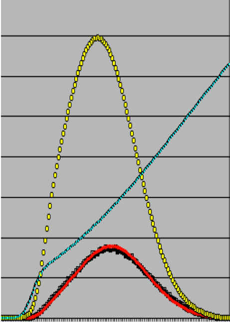
Extra copies of the report may be purchased by remitting
the indicated purchase price to the Treasurer.
The Prometheus Society Membership Committee Report is copyrighted by the Prometheus Society. This report nor any portion thereof shall be republished in any form without the express permission of the Society as indicated in writing by the President.
By previous agreement of the members of this committee (including all officers of the Prometheus Society) with Darryl Miyaguchi (also one of our committee members), Darryl will have rights to publish this report on his website with all other rights and privileges being retained exclusively by the Prometheus Society.
This material is presented for the membership of the Prometheus Society in determining whether to accept the recommendation resulting from the deliberations of the 1998/99 Membership Committee deliberations.
Neither the Prometheus Society nor the Membership Committee warrant this material beyond its intended use. We do not maintain that there are no errors in this document. It is simply the best that we could do within the limitations of time and resources that were available to us.
Prometheus web site: http://prometheus.wwwh.com/
Report on-line: http://prometheus.wwwh.com/subscribers/mcreport/html/
For the User identification and Password to restricted areas of the web site where the Membership Committee Report is available, you may contact the Web Site Coordinator Fredrik Ullén.
II. Appointments to the Committee ... 5
III. Authority and Role of the Membership Committee 6
IV. Committee Operating Procedures.. 7
V. Recommendation .. 8
VI. Action Items.. 10
VII. Schedule.......... 11
VIII. Issues to be Addressed......... 12
8.2 Definition of the Scope of Membership Committee Evaluations 14
8.3 Review of Historical Entry Criteria 16
8.3.1 Assessment of Current Prometheus Membership Intelligence Credentials . 16
8.3.2 Review of Compromise and Erosion Threats . 16
8.3.3 Surveys of Capabilities and Comparisons . 18
8.4 Review of Norming Analyses of Currently Accepted Tests 21
8.4.1 Mega Test . 21
8.4.2 Mega27 Test . 30
8.4.3 Titan Test . 33
8.4.4 Langdon Adult Intelligence Test . 35
8.5 Scholastic Aptitude Test 37
8.5.1 Background Data . 37
8.5.2 SAT Data Correlations with IQ . 37
8.5.3 Cautionary Notes and Considerations . 37
8.5.4 SAT Intelligence Filter . 39
8.5.5 Ability of SAT to Discriminate at the High End . 41
8.5.6 Establishing 1-in-30,000 Cutoff for "Old" SAT . 42
8.6 Additional Alternative Tests 43
8.6.1 Mensa Testing Approaches 43
8.6.2 Cattell Culture Fair III . 43
8.6.3 Ravens Advanced Progressive Matrices . 44
8.6.4 California Test of Mental Maturity 47
8.6.5 Graduate Record Examination .. 48
8.6.6 Miller Analogies Test 50
8.6.7 Wechsler Adult Intelligence Scale - Revised .. 50
8.6.8 Stanford-Binet Intelligence Scale 51
8.6.9 Concept Mastery Test . 54
8.7 Chronometric Testing 55
8.7.1 Some Background on Chronometrics 55
8.7.2 Correlation of Chronometric Measurements and Intelligence 55
8.7.3 Additional References .. 56
8.7.4 ThinkfastTM, the Game 56
8.7.5 ThinkfastTM, the Game as a Psychometric Instrument.. 57
8.7.6 The Selective Filter Involved in ThinkfastTM Score reporting 58
8.7.7 Discussion of Perceived Problems with ThinkfastTM .. 59
8.7.8 ThinkfastTM, Ability to Discriminate at the 1-in-30,000 Level 61
8.7.9 One Year Trial Recommendation 61
8.8 Development of Unique -- Elo-Like Scoring.. 62
8.9 Explore Cmbinational Approaches 62
8.10 Review Phrasing of Intelligence Claims in Prometheus . 63
IX. Definition of Terms 64
X. Mathematical Concepts and Methods Appendix 74
XI. Membership Committee Resume Data 83
XII. References 88
Figure 1: Difficulty of Compromised Mega Problems 17
Figure 2: Mega vs. SAT Score Correlation 22
Figure 3: Equipercentile Equating of Mega and SAT 22
Figure 4: Correlation of Mega vs. Other Test's Score Pairs 23
Figure 5: Equipercentile Equating of Mega and GRE 24
Figure 6: Equipercentile Equating of Mega and CTMM 24
Figure 7: Mega48 IRT Test Scoring 25
Figure 8: Distribution of Mega Test Raw Scores for Sixth Norming 26
Figure 9: Mega IQ-Scaled Distribution (actual, predicted, general population) and filter 27
Figure 10: Mega IQ-Scaled Distribution (actual and predicted) -- log scale 28
Figure 11: Correlation of Score Pairs of Mega27 and Mega48 31
Figure 12: Mega27 IRT Test Norming 31
Figure 13: Mega (48-item) Test Scoring -- Traditional vs. Maximum Likelihood 32
Figure 14: Mega27 Test Scoring -- Traditional vs. Maximum Likelihood 32
Figure 15: Titan vs. Mega (48-item) Correlation of Score Pairs 34
Figure 16: Titan vs. Mega Equipercentile Equating 34
Figure 17: LAIT vs. Mega (48-item) Correlation of Score Pairs 35
Figure 18: SAT (Verbal Plus Mathematical Parts) Frequency data 40
Figure 19: Population Distributions for the SAT (general, actual, predicted) 40
Figure 20: SAT Actual and Predicted Distributions --log scale 41
Figure 21: SAT Discrimination Capabilities (Test1) 41
Figure 22: SAT Discrimination Capabilities (Test2) 41
Figure 23: GRE Equipercentile Equating with SAT for reported Score Pairs on Mega 48
Figure 24: GRE Correlation with MAT for 1341 Score Pairs 49
Figure 25: Extent of Data for CMT 54
Figure IX.1: A Normal Distribution 69
Figure X.1: Illustration for Confidence Interval Determination 76
Figure X.2: Difficulty Profile, pn(CK), for Problem #11 on the Mega 81
Some Available Psychometric Instruments List 15
Correlations of IQ Tests with Mega 23
Mega "Verbal" vs. "Non-verbal" Factor Analysis 28
LAIT "Verbal," "Spatial," and "Number" Factor Analysis 36
LAIT Rotated "Fluid" and "Crystalized" Factors 36
SAT Coaching Improvement Table 38
SAT High Range Data Distribution (1984) 42
SAT High Range Data Distribution (1984 - 1989) 42
RAPM General Population Percentile by Age Group 45
RAPM General Population Percentile by Age Group -- Extended to 4 sigma 45
RAPM Norms for Various Occupation Groups -- mostly UK 46
RAPM Untimed Smooth Summary Norms for USA 46
GRE Percentiles for Filtered Population 49
WAIS-R Regression Equations for the Full Scale IQ 51
Standardization Sample for Stanford Binet 53
The purposes of the deliberations of the 1998/99 Prometheus Society Membership Committee were several. One purpose was to address concerns about the leakage of information over the Internet on tests accepted for qualification for entry to the Society. It was also to investigate the possibility of including a broader scope of tests of cognitive ability while maintaining the 99.997 percentile (1-in-30,000) of the general population Prometheus Society selection level criterion. Another purpose was to analyze the current entry criteria on accepted tests to determine whether the 1-in-30,000 criterion is being maintained by all. Some of these issues were identified by Kevin Langdon in "Admission Standards" (Gift of Fire, Issue 99, 7, September 1998).
As outlined by the chairman Fred Vaughan in "The Membership Committee and Its Charter" (Gift of Fire, Issue 100, 6, October 1998), it has been our objective to have a recommendation to the general membership of the Prometheus Society by the deadline for publication to Gift of Fire issue #102 (submission deadline January 9, 1999) with balloting to take place in issue #104. It has also been our intent from the outset to produce a report that will be available to members and nonmembers who wish to scrutinize the membership entry requirements of the Prometheus Society; we hope thereby to eliminate disputes -- or at least to provide data to make such debates more meaningful.
The academic literature on psychological testing or psychometrics is now huge. No concerted attempt was made to make a comprehensive review of this literature, but see, for example, the following recent works to get a flavor of this field: Benbow & Stanley (1996), Van der Linden (1996), Nunnally & Bernstein (1994), Murphy (1997), Janda (1998), Fischer & Molenaar (1995), Kline (1993 and 1998), Crocker & Algina (1986).
We do not claim that our results are indisputable nor that there are no flaws or oversights in the analyses presented here. We present this as a start in what must be a continuous process of maintaining the integrity of our entry criteria. This report attempts to address concerns such as that expressed by James Harbeck in his brief note entitled, "Questions Concerning the Membership
Committee", (Gift of Fire, Issue 83, March 1997). The membership requires more than a recommendation -- they require information in order to know whether to support that recommendation. We think we have provided that data.
The President and Membership Officer are constitutionally installed members of the Prometheus Society Membership Committee as described in section III of the Prometheus Society constitution duplicated in section III of this report below.
ROBERT DICK, Membership Officer <rdick@idt.net>
GUY FOGLEMAN <GCFogleman@aol.com>
GREG GROVE <GAGrove@aol.com>
GINA LOSASSO <GLoSasso@aol.com>
BILL McGAUGH <bmcgaugh@pe.net>
DARRYL MIYAGUCHI <miyaguch@usa.net>
FREDRIK ULLÉN <freull@ki.se>
HEDLEY ST. JOHN-WILSON <H.D.Wilson@durham.ac.uk>
We appreciate our Membership Officer, Robert Dick's constructive participation which was unfortunately limited by serious medical problems. Robert has asked that we print the following statement.
"I have been a Constitutionally mandated member of the Membership Committee. In that capacity I have supplied member score data sanitized so the names cannot be identified. Due to personal illness, among other reasons, that is about all of my contribution. Accordingly I cannot claim for myself the honor of being an author of the Committee report. My hat is off to the many expert and dedicated members who deserve both the honor and the responsibility for the report."
The role and authority of the Membership Committee as well as the President and chairman in their respective capacities on this committee are defined in the constitution of the Prometheus Society as follows:
1. All members of the Prometheus Society as of December 1, 1996 are presumed to have satisfied the membership requirements.
2. Membership in the Prometheus Society is open to anyone who can provide satisfactory evidence of having received a score on an accepted IQ test that is equal to or greater than that received by the highest one thirty thousandth of the general population. An accepted IQ test is defined as an IQ test that the Society has determined to be acceptable for admission purposes.
3. The President shall appoint a Membership Committee to rule on the acceptability of various IQ tests, to determine what minimum scores on each test qualify for admission, and to periodically review and make recommendations on admission standards in general.
4. The committee shall consist of the President, the Membership Officer, and at least three other members such that a majority of the other members are recognized as having experience in the field of psychometrics.
5. The committee shall propose to the membership specific guidelines on tests and test scores for the Membership Officer to follow. Upon ratification of these guidelines by membership vote as specified in Article IX, they shall become binding on the Membership Officer."
The committee performed its business primarily over the Internet using e-mail messages that were routed only to other members of the Membership Committee except as authorized specifically in writing by the chairman. (This was felt to be particularly important because we would be discussing topics that could compromise the tests accepted for qualification to the Society.) Web site files were also used but if they pertained to the Membership Committee exclusively, they were either password protected or their URLs were not disclosed outside of the committee except as authorized by the chairman. Individual Membership Committee members have interacted among themselves at their own discretion, but only information routed to all Membership Committee members was considered for inclusion in this final report including the recommendation to the general membership for balloting. Individual members or Membership Committee splinter groups defined by the chairman to perform specific tasks, have reported their findings for discussion by the entire committee. Discussions of specific problems and whether or not they were to be considered compromised based on answers circulated and the specifics of where such data is available typically involved only a subset of the committee.
Each step (agenda item) in the deliberation process was documented by the chairman or his designee using materials generated by the Membership Committee and the results were routed for comment and consensus. No item was closed out until every member of the Membership Committee had been given a reasonable opportunity to review and comment upon it. This required a 24-hour minimum per item to accommodate our world wide Membership Committee membership. Membership Committee members checked their e-mail regularly and responded to those items for which they had specific interest or concern. (They were encouraged to notify the chairman if they would be out of contact for more than 24 hours. An effort was made to keep consensual actions from occurring on weekends.) Requested delays prior to concluding a Membership Committee decision were honored without exception. Requests for delays were requested to be accompanied by specific rationale and/or the data that the requester wished the rest of the committee to consider.
Decisions identified as being made by the chairman (other than the appointments to the committee), have been consensus positions wherever possible. The chairman acted primarily as a focal point of that consensus to reduce chaos. Procedures were subject to modification as we went along but the procedures documented here were essentially the procedures that we followed throughout.
Specific positions argued and quotations of individuals during the deliberation of the Membership Committee will remain confidential. Detailed rationale for all recommendations of the committee are provided in this final report signed by all committee members. A pledge of confidentiality for the discussions in deliberation was a prerequisite for continued appointment to this committee. It was decided that a single consensus position would be incorporated into this report if such a consensus could be obtained. If more than a single individual shared a position counter to the consensus, that position is summarized in the report as well subject only to the desires of those sharing the position.
Intellectual rights to publication of material generated as a part of the deliberations of this committee belong to the individual or individuals who generated the material, but publication must be approved by the committee as expressed in writing by the chairman to assure the following: 1) All individuals who contributed to the material to be so published shall be cited if they so desire and 2) No data contained in the material to be published shall compromise Prometheus Society entry criteria.
Agreement to these operating conditions has been a prerequisite for continued appointment to this committee. Concurrence with these conditions is tacit by a member's not having notified the chairman of a wish to resign appointment.
The following recommendation of this membership Committee has been printed in issue #102 of the Gift of Fire (submittal deadline 9 January, 1999) which was mailed out together with a hardcopy of this report to all hardcopy members of the Prometheus Society and hardcopy subscribers of record to the Gift of Fire. On-line members and subscribers have been notified of availability of the report on-line at <http://prometheus.wwwh.com/subscribers/MCReport.html>.
5.1 Statement of Recommendation
We on the Membership Committee are proud to present to the Prometheus Society our proposal for revised entry requirements to the Society. We aver that it is our considered opinion that this recommendation, if adopted by the membership, will be in the best interest of this Society and its members. Our recommendation is as follows:
Entry into the Prometheus Society based on a Mega or Titan score shall no longer be allowed after the date of issuance of the issue of Gift of Fire in which acceptance of this recommendation is indicated to have been ratified by the membership. Anyone having secured a raw score of 36 on either of these tests dated before that date shall be entitled to rights and privileges of the Society.
Anyone with a score of 164 or greater on the LAIT scored before December 31, 1993 shall be entitled to rights and privileges of the Society.
Anyone with a score of 1560 on the "old" SAT (taken before April 1, 1995) shall be entitled to rights and privileges of the Society.
Anyone with a score of 1610 on the "old" GRE (taken before October 1, 1981) shall be entitled to rights and privileges of the Society.
Anyone with a score of 98 on the MAT shall be entitled to rights and privileges of the Society.
Anyone with a raw score of 88 on the Cattell Culture Fair III (A+B) obtained at an age of 16 years of age or older shall be entitled to rights and privileges of the Society.
Anyone with a score of 160 on the WAIS-R obtained at an age of 16 years or older shall be entitled to rights and privileges of the Society.
Anyone with a score of 21 on the Mega27 shall be entitled to rights and privileges of the Society, if a validated accompanying score on an accepted test for demonstrating a 1-in-1,000 cognitive ability according to that test is provided to the Membership Officer along with proof of the mega27 score.
And, for a trial period of one year:
After one year, the following data will be used to determine whether to retain the test permanently, extend the trial period or discontinue this test as an entry requirement to the Society.
1. numbers of applicants to the Society who use this ThinkfastTM test criterion,
2. accompanying scores on standard tests of applicants who use this ThinkfastTM test criterion,
3. additional statistics available on high scores of ThinkfastTM participants,
4. our increased understanding of ThinkfastTM as a chronometric/psychometric instrument.
5.2 Rejection of the recommendation
If our recommendation is rejected by a majority of voters, the Prometheus Society will retain the entry requirements established by vote in 1997.
We have accepted the following outstanding items that we recommend for further action.
6.1 Obtain written agreement with Ron Hoeflin on Mega27
Firm up agreement in principle with Ron Hoeflin on scoring procedures and application processing for the Mega27 test. Also obtain written specifications of how profile data is to be handled by Membership Officer.
6.2 Evaluate Titan test
We have agreement in principle with Ron Hoeflin to obtain data for 500 individuals who have taken the Titan test. We must perform analyses similar to those which gave rise to the Mega27 for the Titan to avoid compromised problems. Also solidify norming for the Titan.
6.3 Consider the relationship of age and intelligence
There are a couple aspects of IQ variations with age that must be considered in some depth with regard to our entry requirements:
1. whether to allow test results for individuals under 16 years of age and
2. whether to consider an age profile (particularly applicable to those over 30 years of age) for intelligence criteria.
6.4 WAIS subtest qualification possibilities
6.5 Evaluate results of one-year trial period of use of ThinkFast to qualify applicants for Prometheus.
After one year, the following data will be used to determine whether to retain the test permanently, extend the trial period or discontinue this test as an entry requirement to the Society:
1. numbers of applicants to the Society who use this ThinkfastTM test criterion,
2. accompanying scores on standard tests of applicants who use this ThinkfastTM test criterion,
3. additional statistics available on high scores of ThinkfastTM participants,
4. our increased understanding of ThinkfastTM as a chronometric/psychometric instrument.
6.6 Investigate tests in other languages, including translations of English tests.
The following are the dates and accomplishments that we had originally scheduled. We were considerably off-schedule from time-to-time but it did nonetheless draw us back to reality. We feel that we have accomplished the pressing tasks that were before us.
10/10/98 Acceptance of an agenda and operating procedures
10/10/10 Definitions of applicable terminology
10/15/98 Descriptions of applicable mathematical methods
11/10/98 Review of our currently accepted tests and possible errosion
12/10/98 Review of alternative "IQ" tests, Mensa-monitored, SAT, GRE, etc.
12/28/98 Review of chronometric test proposals.
01/02/99 Considerations of composite criteria
01/09/99 Review of constitution and creation of MC recommendation
01/15/99 Publication of Report
8.1 Operating Definition of Prometheus Society Entry Conditions
Entry criteria for membership in the Prometheus Society are based on verifiable claims of a particularly high level of intelligence. A 99.997 percentile or 1-in-30,000 of the general population has been maintained as the goal; the accuracy with which we have been able to meet that goal in the past and intend to maintain it in the future are discussed as a part of the analyses of this report.
With regard to the question, "What is the intelligence that should be assessed at this level?" we have been somewhat reticent to assert an answer. In other words we have waffled somewhat on whether, it is a fluid intelligence factor (spatial/abstract reasoning) or a crystallized intelligence factor (accumulated knowledge and verbal skills). A consensus of the Membership Committee believes it should be the former. Hedley St. John-Wilson gives the evidence for a general factor in his article, "The Scientific Evidence Behind 'General Intelligence' Tests" (Gift of Fire, Issue 95, January 1998). However, the Membership Committee is quite divided on whether the "fluid intelligence factor" is a single or many biologically-based capabilities. It is also divided on the ability of individual tests to effectively discriminate between a single general and a combination of many specific mental capabilities. The articles, "What is this thing called 'g' or Gee, what is this thing called?" (Gift of Fire, Issue 80, November 1996) and "What Intelligence is...isn't...is too!" (Gift of Fire, Issue 82, February 1997) by Robert Low, Ronald Penner's "Gee, Maybe There's More to 'g'"(Gift of Fire, Issue 82, February 1997) and "Discussion of the Central Limit Theorem as Applied Specifically to Overall Intelligence" (Gift of Fire, Issue 82, February 1997) by Fred Vaughan all address this debate. These conceptual and philosophical disputes involve medical, anatomical, psychological and genetic expertise which have not been adequately represented on our team. See for example, Fredrik Ullen's article, "The Multiple Biological Correlates of g", (Gift of Fire, Issue 100, October 1998), David Roscoes "Group IQ Tests" (Gift of Fire, Issue 81, January 1997) and Fred Britton's "Is There a Physical Substrate to Intelligence", (Gift of Fire, Issue 83, March, 1997).
We, therefore, have decided to restrict our assessment of testing capabilities to the statistical validity of accepted psychometric instruments to correlate well with other accepted instruments and to discriminate individuals at the 1-in-30,000 level. We recognize that individuals selected via different tests may differ in their thinking abilities accordingly, but each will have satisfied the ostensible requirement of being in the top 1-in-30,000 of the general population with respect to cognitive abilities measured by one of these tests. It is generally agreed that the general intelligence factor ("g") will influence performance across the spectrum of cognitive abilities measured by such tests and will result in at least a moderate g loading (~0.5 - 0.6) for an accepted test.
The Membership Committee is also in agreement that "1-in-30,000" rather than "4 sigma" is our target since the former claims nothing with regard to the distribution of the population as assessed by the test, restricting its emphasis to the rarity of individuals in this category.
The issue of age restrictions for entry to the Prometheus Society has been discussed and it has seemed reasonable to us at this time not to accept individuals under the age of 16 years, although we are somewhat split with regard to the age limit for scores that can be allowed. We think this issue should be addressed at a later time when there is more time to fully evaluate the data -- we have taken such an action item. Our current recommendation of the 16 years of age limitation derives in part from of our concern with regard to what might otherwise give rise to restrictions on subject matter in the journal. It is also related to concerns that too early testing has been shown in many cases to significantly overestimate intelligence. See for example Michael Colgate's article, "P's and Q's of Intelligence" (Gift of Fire, Issue 97, July 1998) in which he presents cogent arguments suggesting that another aspect of intelligence which he calls "precociousness" that applies exclusively to younger children may render rather unrealistic IQ scores on tests taken at a young age. Also Sare presents arguments and predictions that discount Stanford-Binet scores for younger individuals. (See <http://www.brain.com/bboard/read/iq-archive2/2351>.)
If the recommendations of this Society are approved, we will begin a new era with new members joining based on a diverse spectrum of psychometric instruments, but each with credentials establishing him or her at the 1-in-30,000 level of capabilities as measured by a particular instrument. Many of these tests (in fact most standardized tests of mental ability) make no claims for being able to discriminate intelligence beyond 150 IQ. Our acceptance is based on frequency data indicating that the rarity of 1-in-30,000 is attained independent of the particular intelligence claims made for that distinction. We have opted in all cases to base our recommendations on as solid a factual foundation in available data as possible and not on the claims of developers and/or distributors -- nor yet the detractors -- of these instruments.
It is of particular interest that in Joseph Matarazzo's book, Wechsler's Measurement and Appraisal of Adult Intelligence, (5th ed., 1972), he attributes lowered ceilings to intentional acts based on presumptions by the test developers themselves of a lack of utility of intelligence above the 150 IQ level.
If our recommendations are accepted, the Mega27 test (a subset of the Mega test defined by this Membership Committee for which the developer has agreed to provide scoring capabilities) will be the only existing tie to former testing methodologies and Prometheus Society entry qualification criteria. We also have an agreement in principle with the developer of the Titan test in which he has expressed willingness to provide data with which we may perform analyses similar to what has been done to obtain the Mega27 test. We have taken an action item to perform such analyses so that hopefully a version of the Titan test can be reinstated among our recommended tests. The elimination of formerly accepted tests has not been intentional in the sense of discrediting former methodologies and entry criteria but rather a requirement imposed by compromises that have occurred to these previously accepted tests. We are hopeful that we will be able to provide similar capabilities in the future.
8.2 Definition of the Scope of Membership Committee Evaluations
In its recommendation, the Membership Committee has acted to maintain the integrity of the Prometheus Society entry criteria and enable continued enrollment into the Society to anyone whose credentials can be verified as meeting those criteria.
The Prometheus Society will be forced to reevaluate the specifics of its entry criteria whenever new information emerges and is made available to the Society concerning any of the following:
A specific task before the Membership Committee was to determine whether any of the changes identified above have occurred with respect to accepted tests, which would necessitate entry criteria changes at this time. We think there have been and have acted to assure that we have maintained reasonable means for entry to the Society.
To warrant that a test or methodology satisfies membership criteria the Membership Committee has felt it appropriate to perform analyses to verify the following:
In order to set a 1-in-30,000 of the general population cutoff on a test, "good psychometric practice" would probably require that a generally accepted highly g-loaded test be administered in a supervised manner to millions of individuals randomly selected from the general population. This wealth of data is not, nor will it probably ever be, available so an alternative approach has to be employed. When used correctly, the quantification of intelligence filtering to assess the degree of selection on those who actually take the tests is a legitimate method that must be relied upon. See Vaughan's "Intelligence Filters" (Gift of Fire, Issue 79, October 1996). Similarly, extrapolation beyond traditionally accepted norms may in some cases be warranted depending on the quality of the data and the degree to which it must be extrapolated.
2. That appropriate types of reliability estimates have been determined for the test.
3. That the necessary statistics have been used properly to compute these estimates?
ACT
American School Intelligence Test-High School Battery
American School Intelligence Test-Primary Battery
Analysis of Learning Potential-Advanced I Battery
Analysis of Learning Potential-Advanced II Battery
Arthur Point Scale of Performance Test
BAS -- British Abilities Scale
Black Intelligence Test of Cultural Homogeneity (BITCH)
California Short-Form Test of Mental Maturity
Cattell Culture Fair Intelligence Test-Scale 2&3
Chicago Non-Verbal Examination
Cognitive Abilities Test Form 5 1993
Counter Intelligence Test-Chitlings
Detroit General Intelligence Exam-Form A
Full-Range Picture Vocabulary Test
GMA -- Graduate Management Assessment (UK)
Goodenough/Harris Drawing Test
GRE
Henmon/Nelson Test of Mental Ability
Henmon/Nelson Test of Mental Ability-College Level-Rev Ed
Hiskey/Nebraska Test of Learning Aptitude
Kuhlmann/Anderson Tests-8th Ed
Langdon Adult Intelligence Test (LAIT) Retired
Learning Efficiency Test-II (LET-II) 1992
Leiter International Performance Scale
Lorge/Thorndike Intelligence Tests
LSAT
MAT
MCAT
Mega Test
Oregon Academic Ranking Test
Otis/Lennon Mental Ability Test-Advanced Level
Peabody Picture Vocabulary Test 3rd Ed Form IIIA (PPVT-IIIA) 1997
Pintner/Cunningham Primary Test-Rev
Pressey Classification & Verifying Tests
PSR (Psychological Stimulus Response)
Quick Test
Raven Advanced Progressive Matrices -- Sets I & II
Ross Test of Higher Cognitive Processes
Slossen Full-Range Intelligence Test (S-FRIT) 1993
Slossen Intelligence Test (SIT-R)-Rev Ed 1990
SAT
SRA Pictorial Reasoning Test
SRA Primary Mental Abilities (PMA)
Standard Progressive Matrices
Stanford/Binet Intelligence Scale-4th Ed
Stanford Ohwaki/Kohs Block Design Intelligence Test for the Blind
System of Multicultural Pluralistic Assessment (SOMPA)
Test of Cognitive Skills 2nd Ed (TCS/2) 1992
Test of Nonverbal Intelligence 3rd Ed (TONI-3) 1997
ThinkFast (Chronometric)
Titan Test
Wechsler Adult Intelligence Scale-Rev (WAIS-R)
Wechsler Adult Intelligence Scale 3rd Ed (WAIS-III) 1997
Wide Range Intelligence & Personality Test (WRIPT)
Woodcock-Johnson Psycho-Educational Battery-Rev (WJ-R) 1989/90
8.3 Review of historical entry criteria
8.3.1 Assessment of Current Prometheus Membership Intelligence Credentials
The Prometheus Society was founded in 1982. It's initial constituency had all been members of the former Xenophon Society which had entry requirements of 1-in-10,000 of the general population, an IQ of about 160. Notwithstanding many of these initial members were qualified at the 1-in-30,000 level and beyond according to accepted psychometric instruments. The initial entry requirement, once Prometheus had been established, was set at the 1-in-30,000 level which was incorporated into the Prometheus Society constitution.
There are currently 67 members of the Prometheus Society that are in good standing. There are upwards of 150 to 200 who have been members at one time or another.
By checking our current roster and that which was first published in issue #2 of Gift of Fire (July 1984) shortly after the Society was formed, it has been determined that there are no more than 8 currently active members who could have been admitted under the Xenophon cut-off of 1-in-10,000. That assumes that no other Xenophon members who weren't active in July 1984 have since joined using their prior Xenophon membership as entry qualification. We believe that to be the case.
Within the constraint of 1-in-30,000, the specifics of membership criteria have changed over the years with various tests and acceptance levels having been used that reflected that requirement. However, according to the Membership Officer's records, the current Prometheus Society average IQ according to LAIT, Mega, and Titan test normings (using each test independently or using all the data) is about 167. This is what would be expected statistically for a society with a 1-in-30,000 cutoff.
Using data derived from the Membership Officer's records, the following further characterizations can be made: The average and median for the current and former members taking the LAIT in the 1978-79 time frame is the same as for the 1992-93 time frame (around 166-167). The average and median for the current and former members taking the Mega test in the 1984-85 time frame is about 1 point lower than for the members taking the Mega in the 1994-98 time frame (Mega average and median are around 37-38 in 1984-85, around 38-39 in 1994-98, and around 38-39 for 1998 alone). Differences over the years do not seem to be statistically significant. For the Mega test calculations, this result did not include scores below the current Prometheus Society cutoff of 36 and thus a conclusive result would require a comprehensive review of Dr. Hoeflin's scoring data for the respective years for which the average is a raw score of 35.5.
8.3.2 Review of compromise and erosion threats and discussion of the appropriate reactions
A major reason for the current Membership Committee's urgency is the concern with regard to rumors that there have been significant compromises to our entry criteria tests. This aspect of our deliberations has been a priority and we feel that we have obtained a good understanding of the threats and the actualities of compromises over the Internet and via other media. Our recommendations reflect that understanding.
Compromises to the Mega:
There have been several different types of answer distribution problems on the Mega test. The numbers of, and difficulty index associated with, problems that have been leaked in various categories from easiest to hardest are captured in the graphic below. Also shown are the means whereby each problem has been compromised.
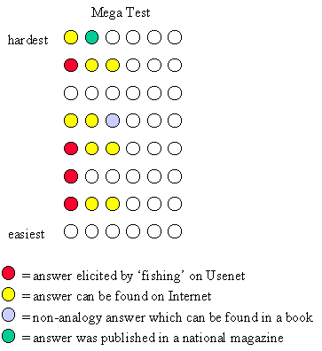
Although the graphic contains only two compromised problems at the highest difficulty, some feel that at least three of the spatial/numerical problems have published solutions in Martin Gardner's books and/or other puzzle classics (references needed). Ron Hoeflin denies that they originated at that source.
The five hardest problems that have been leaked are the ones that would result in the most significant impact on the Prometheus Society. In order to get a score of 36 (a current entry criterion) on the Mega test by cheating one would need to have gotten these five correct plus 31 others. Someone who can solve 31 extremely difficult problems without cheating would probably be able to solve the 10 easiest leaked problems on his or her own without cheating. Thus, even with the leaked answers, the best someone would be able to do would be to turn a legitimate score of 31 into a with-cheating score of 36. By the 6th norming of the Mega Test, a score of 31 corresponds to an IQ of 158. So the impact on the Prometheus Society of leakage of these problems is not felt to be extremely significant at this time.
The existence of on-line integer sequence solvers compromises all integer sequence problems -- if they are not already solvable someone will solve them so we feel that we should include them in the list of compromised problems.
A point that may need some reconsideration in the future is that several of the problems in the Mega test appear to be easily solved/checked with computers. At least 7 of the non-verbal problems could be solved with a fairly simple computer program. A professional programmer might perhaps attack even more problems this way. This raises the question of whether we are unduly slanting our criteria to computer professionals. For a counter argument you might refer to "Sweetness and Stinging from the Honeycomb Series" (Gift of Fire, Issue 101, November/ December 1998).
We are faced with the question: Should the Mega test be retired in order to keep out dedicated cheaters with IQs in the 158 - 163 range? At a minimum several precautionary moves can and should be implemented to ameliorate the problem as, for example, eliminating test questions that are known to have been compromised. The Mega test is still a valuable instrument in that, largely because of Darryl Miyaguchi's web site, many new people are becoming familiar with the High IQ Societies and taking this high range test. The Prometheus Society continues to receive an appreciable number of new applications which may derive in part from this cause. This seems to us to offset some of the negative aspects associated with the possibility that the Society might thereby accept a few individuals at this time who are only marginally qualified for membership because they may have found a leak before we have. However, we must take care of the problems of which we are aware and address the possibility of continued erosion of the test with continued vigilant surveillance.
Notice that a certain amount of trust is involved even if the Mega test answers are not available on the Internet. In particular, there is no way to verify that a test-taker worked independently. Also, the "leaked" answers available on the Internet are not exactly easily available. One can not just use a search engine to search on "Mega test" to obtain the answers. The answers to the hardest five of the leaked problems are available separately on unrelated sites which would therefore require some ingenuity and persistence.
However, it is our consensus opinion at this point that we cannot warrant all 48 questions of the Mega test for qualification to the Prometheus Society. As you will see further on, we have defined a subset of questions which would constitute a test in its own right that we have shown to be able to discriminate at the 1-in-30,000 level. This test (the Mega27) eliminates all known compromises to the test as well as a few of the very simplest problems that may certainly be compromised in the near future and which have added little of value as we have demonstrated in discriminating at to the Prometheus Society's desired cutoff level and beyond.
The entire Mega test will probably need to be retired in the not too distant future. Alternative high range tests may be available before that time comes.
Compromises to the Titan:
The Titan is a newer test and appears on face value to be a more difficult test than the Mega which may have protected it somewhat from those individuals on the Internet who have concentrated on "cracking" the Mega.
However, the number sequence problems are compromised in the same way as for the Mega, and lacking the item data that we have on the Mega, we have been unable to come up with a method for estimating scores if we exclude the sequences. Therefore, unless and until we obtain norming data for the Titan, we feel that we must remove the Titan from our recommendation of approved tests for qualification for the time being.
Notice that we have obtained agreement in principle with Dr. Hoeflin whereby he will provide us with data for 500 examinees with which we can perform analyses similar to those that gave rise to the Mega27. We have accepted an action item to perform those analyses and report back to the membership on our conclusions.
8.3.3 Surveys of capabilities and comparisons of various segments of the population and psychometric instruments
There are a considerable number of summaries and reviews that have been published in High IQ journals and elsewhere which review relative ranges of coverage of different tests and expected intelligence of various segments of the population. However, these summaries are not all in agreement and typically do not include data at the level of our entry requirement. So we have used them primarily for orientation and guidance.
Greg Grove, psychometrician of the Triple Nine Society (TNS), published data that relates percentile rankings of various segments of the population, relating them to Mega test raw scores in his article, "IQ/Percentile Ready Reckoner" (VIDYA, Issue 177, July/August 1998). A problem with this review from the Membership Committee's perspective is that since it was prepared with TNS in mind, it only goes up to the 99.9th percentile.
There is also a survey of numbers of participants in various High IQ groups by percentiles presented by Guy Fogleman in "An Amateur Statistical Analysis of a Hi-IQ Society Membership Trend" (Gift of Fire, Issue 97, 16 - 17, July 1998).
Kjeld Hvatum provides a table of IQ percentiles versus scores on various psychometric instruments including the Mega in his "Letter to Ron Hoeflin" (In-Genius, Vol. 15, August 1990) that shows comparative raw scores at percentiles up to and beyond the Prometheus Society cutoff level. This table is provided below as reference only. It has not been validated by the Membership Committee and is not a part of our recommendation per se. But it represents of the kind of digested information that is available which has led us to investigate some of these tests in more depth and place less emphasis on others.
WAIS CLASSIFICATION, %ile in the general population
descriptions,
| standard deviation
High-IQ societies, |
| IQ SD-15 - WAIS, WISC
v = "here and down" |
| | SD=16 - Binet, CTMM, Otis-Lennon
| | |
|
PROFOUND RETARD.---v .13e-8
| 00 -07 IQ SD-23.7 - Cattell (Verbal)
SEVERE RETARD.-----v .29e-4
| 25 20 | SAT Verbal
MODERATE RETARD.---v .0031
| 40 36 | | GRE Verbal
MILD RETARD.-------v .13
| 55 52 | | |
Miller Analogies
BORDERLINE RETARD.-v 2.3
| 70 68 | | |
| SAT Verbal+Math
DULL-NORMAL--------v 9.1
| 80 79 | | |
| | Mega Test
AVERAGE------------v25.0
| 90 89 | | |
| | |
general pop. ave.---50.0
0.00 100 100 100 340 | | | 1
high sch. grad ave.-60.0
0.25 104 104 106 370 | | 790
70.0 0.53 108 108 112 410 |
| 860
BRIGHT-NORMAL------v75.0
0.68 110 111 116 430 | | 910 2
80.0 0.83 112 113 120 450 420
| 940
college grad ave.---84.1
1.00 115 116 124 470 440 38 980 3
90.0 1.29 119 120 130 500 470 43 1040
SUPERIOR-----------v9l.O
1.33 120 121 132 510 480 44 1060 4
93.0 1.47 121 122 135 530 500 47 1100
5
Ph.D. & M.D. ave.---95.0
1.63 125 126 139 550 530 52 1150 6
97.0 1.87 128 130 145 580 580 60 1190
8
VERY SUPERIOR------v97.8
2.00 130 132 147 590 600 65 1220 9
Mensa, Camelopard-v98.0
2.06 131 133 149 600 610 66 1230 10
Intertel, TOPS-----v99.0
2.33 135 137 155 640 670 74 1310 14
NMSQT Semifin.-----v99.5
2.57 139 141 161 670 710 81 1360 17
99.7 2.74 141 144 165 690 730 84 1390
19
99.8 2.88 143 146 168 710 740 86 1420
21
ISPE,TNS,Min,Cinci-v99.9
3.09 146 149 173 730 760 89 1450 24
99.95 3.29 149 153 178 750 780 91 1480 27
99.97 3.43 151 155 182 760 790 92 1500 28
99.98 3.54 153 157 184 770 800 93 1510 30
99.99 3.73 156 159 188 780
94 1530 32
99.995 3.90 158 162 192 790
95 1540 34
Prometheus,4 Sig.--v99.997
4.02 160 164 195 800 96 1550 36
99.998 4.10 162 166 197
97 1560 37
Geniuses of Dstng.-v99.999
4.27 164 168 201 98 1570
39
99.9995 4.42 166 171 205
1580 40
99.9997 4.53 168 172 207
41
99.9998 4.61 169 174 209
1590 42
Mega, One-in-a-Mil-v99.9999 4.75
171 178 212
1600 43
99.99995 4.89 173 178 216
99.99997 5.00 175 180 218
44
99.99998 5.07 176 181 220
99.99999 5.20 178 183 223
45
99.999995 5.33 180 185 226
99.999997 5.42 181 187 228
46
99.999998 5.50 182 188 230
99.999999 5.61 184 190 233
47
99.9999995 5.73 186 192 236
99.9999997 5.82 187 193 238
48
99.9999998 5.88 188 194 239
99.9999999 6.00 190 196 242
* Kjeld Hvatum's "Letter to Ron Hoeflin" and Ron's response, In-Genius, # 15, August 1990
8.4 Review of norming analyses of currently accepted tests
In view of continued criticisms of tests that have been accepted for entry to the Prometheus Society, it has seemed prudent to review the norming analyses of these tests to assess whether in our view they warrant continued use for application to the Prometheus Society and to provide data for a more meaningful debate on related issues. We have attempted to understand the rationale for approaches and to determine its legitimacy to the best of our abilities. We have also presented the arguments that have been levied against these instruments.
We believe that we have been fair in our assessments.
We feel that Ron Hoeflin's Mega test may represent the best one can reasonably expect in terms of establishing a credible 1-in-30,000 cutoff on a high-level test of mental performance abilities because of the dearth of available information on other tests at the high level of our cutoff criterion with which to norm and calibrate a high range test. A general statement that can be made about the Mega is that the predictive value of a fairly small number of Mega problems is quite amazing as can
be seen in a subsequent section of this report where the "short Form" of the Mega (the Mega27) is discussed. We have considered negatives that have been pointed out with regard to the Mega test over the years and have attempted to capture those criticisms in a separate section below. Notwithstanding such criticism, we have concluded that the setting of 1-in-30,000 cutoff at a score of 36 on the sixth norming of the Mega Test is quite credible. That is, of course if one could discount the possibility of compromised answers on the Internet and elsewhere as described in section 8.3.2 above. These conclusions are based on the following analyses.
Review of the Mega Test sixth norming:
The Mega Test sixth norming is based on a weighted average of several tests for which paired raw scores are available. The norming is, however, heavily biased towards the SAT since that test provides the largest number of score pairs for the norming. According to the sixth norming, a comparison of the average of the standard tests vs. the combination of standard tests plus SAT scores agree well to somewhat beyond the 1-in-30,000 cutoff with which we are particularly concerned. Notice, however, that in accepting Dr. Hoeflin's sixth norming, we feel that we should also accept SAT and other test scores used in the norming at the associated level for admissions to the Prometheus Society. To do otherwise would be inconsistent since SAT raw score data (in particular) was used explicitly to norm the Mega.
Test Equating: Methods and Practices, by Michael Kolen and Robert Brennan and Test Equating, edited by Paul Holland and Donald Rubin who are with Educational Testing Service (ETS) both discuss "Equipercentile Equating" under the general heading of common ways to find equivalent scores on two different tests. The meaning of this approach is obvious from the name. (It is worth noting that these references refer to "equipercentile equating" rather than equating based on equivalent standard deviations.) This is the technique we have sometimes referred to as "score pairing."
We have spent considerable time discussing the legitimacy of this method and believe the approach itself to be valid. Since it is the approach used by Dr. Hoeflin in norming his Mega test that was previously accepted for entry to the Society, it seemed essential that we understand the rationale for the method. (In general it seems more advisable for the committee to merely evaluate norming data rather than attempting to re-do it.) Bill McGaugh has conducted an independent study to be published in GoF Issue 102 as "(Bill we need a title)" describing the application of this methodology to athletic capabilities of world class decathlon participants in which he shows the method to work effectively in that arena as well. Some (even some of us) have considered this approach nontraditional and somewhat controversial as the "side-by-side" score-pairing by which it is sometimes referred, as though the technique were exclusively used by Hoeflin for establishing the 1-in-30,000 cutoff using the 220 SAT-Mega score pairs. See for example Roger Carlson's article, "The Mega Test" (Test Critiques, Volume VIII, 1991). Evidently, however, it is an accepted method used routinely by the ETS. The following is a plausibility-based argument that the committee used in understanding this equipercentile equating method :
If one assumes that raw scores on the Mega and the SAT are monotonically related to mental ability, i. e., that a higher raw score on either test correlates with higher mental ability, then there is some function z1(n) that relates raw scores on the Mega to standard intelligence scores z and there is some function z2(m) that relates raw scores on the SAT to standard scores z, where z = (IQ-100)/16. It is plausible to assume that the joint probability distribution of z1 and z2 is just the bivariate normal distribution p(z1,z2,r) for some correlation r. This function is symmetric in z1 and z2. Thus, for any random sample for which raw scores exist for both the SAT and Mega, if we have n scores with z1 > 4, then we would expect n scores with z2 > 4. These would not generally be the same n individuals in each case. Thus, if we know the 1-in-30,000 cutoff on the SAT (raw score=1560), and if there are N people in the sample of people taking both the SAT and the Mega scoring at this level or higher on the SAT, then counting down the highest N Mega scores from the sample would give a reasonable estimate of the 4-sigma cutoff on the Mega (raw score=36). Ron Hoeflin showed that, if you do this for several different cutoffs, then the resulting Mega normalization is linear over a range of scores including 36. This linearity feature seems to be standard on IQ tests over their range of applicability.
We are aware that there are difficulties in this argument (e.g., with respect to self-reporting of SAT scores, nonrandomness of sampling, small sample sizes, and mathematically allowed but "unphysical" test scores associated with ceiling effects). Roger Carlson has pointed out several of these problems in his review, "The Mega Test" appearing in Test Critiques, Volume VIII, 1991. We believe that the arguments could be tightened up in the future, but that the use of the data shown in the equipercentile equating plot does not raise any immediate "red flags" in these regards for determining the Prometheus Society cutoff score on the Mega. The correlation data does seem to reveal some reticence on the part of participants to claim SAT scores below 1150 which has probably reduced the correlation coefficient (r=0.495) that is shown by the trend line in figure 2 significantly and is very likely responsible for some of the nonlinearities in figure 2 especially the bending at the low end.
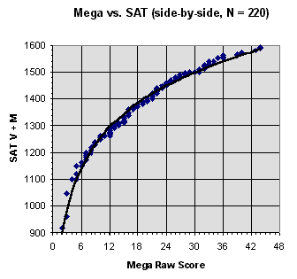
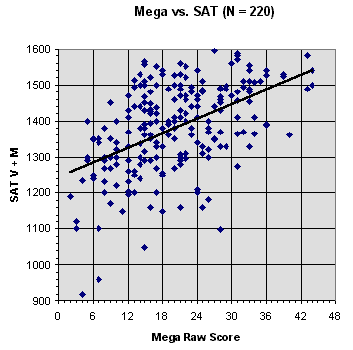
Figure 2: Mega vs. SAT Score Correlation Figure 3: Equipercentile Equating of Mega and SAT
In addition to correlations with the SAT raw scores, data is available
from which correlations have been made against eight other intelligence
tests. Plots of score pairs are provided for the LAIT, Cattell, CTMM and
WAIS in figure 4. (The data for the figure are available at the URL http://www.eskimo.com/~miyaguch/megadata/megacorr2.html.)
These correlations "r" and the number of raw score pairs (N) that they
are based upon are included in the following table:
|
|
|
|
| LAIT (Langdon Adult Intelligence Test) | 0.673 | 76 |
| GRE (Graduate Record Examination) | 0.574 | 106 |
| AGCT (Army General Classification Test) | 0.565 | 28 |
| Cattell | 0.562 | 80 |
| SAT (Scholastic Aptitude Test) | 0.495 | 220 |
| MAT (Miller Analogies Test) | 0.393 | 28 |
| Stanford-Binet | 0.374 | 46 |
| CTMM (California Test of Mental Maturity) | 0.307 | 75 |
| WAIS (Wechsler Adult Intelligence Scale) | 0.137 | 34 |
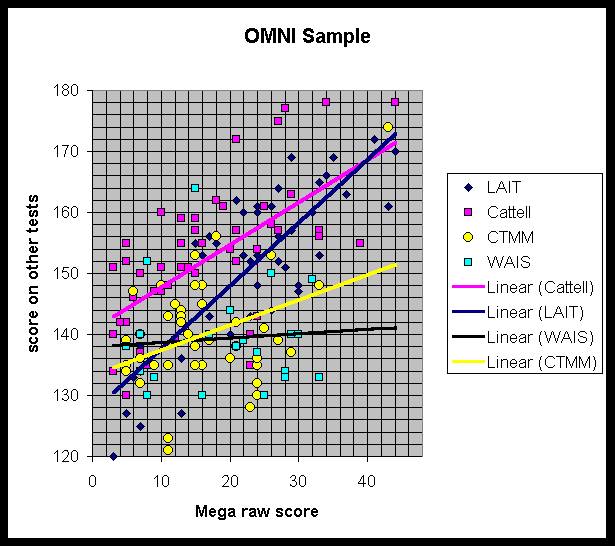
Some of these other tests for which correlations are available including the GRE (presumably on the earlier version for which raw scores sometimes exceeded 1600) and CTMM support equipercentile equating up to or near the 1-in-30,000 cutoff as shown in figures 5 and 6 below. The GRE score of 1610 would seem to be a comparative score to the Mega raw score of 36. This is quite compatible with statements to the effect that ETS had provided data indicating a score of 1620 corresponded to the 4-sigma level as reported by Paul Maxim in his article "Renorming Ron Hoeflin's Mega Test", (Gift of Fire, Issue 79, 8 - 12, October 1996.)
A rather amazing fact is that for the CTMM a 1-in-30,000 cutoff is indicated at a CTMM score of only 155, but of course there is insufficient data to confirm such a result.
The norming data that Ron Hoeflin used in this sixth norming is currently available on Darryl Miyaguchi's High IQ Testing web site.
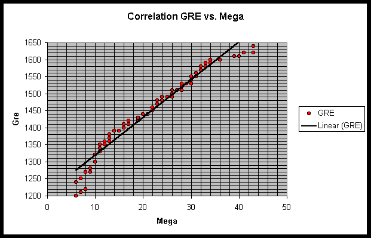
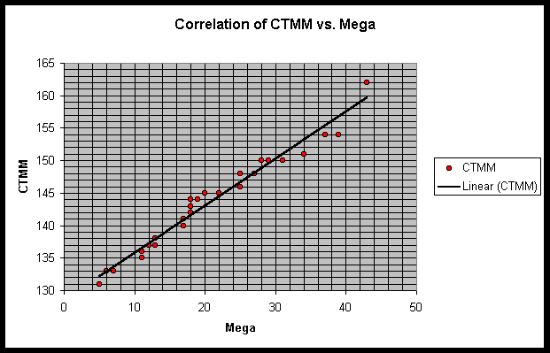
Item Response Theory (IRT) analysis of the Mega test sixth norming:
The norming analysis performed by Grady Tower's that appeared in In-Genius (Issue # 25, January 1991) has been obtained as well as the associated norming data that was provided to Grady by Ron Hoeflin for that purpose. This analysis was re-run as a part of the Membership Committee analyses with a couple of corrections and iterations implemented that had not been present in the original analysis. Iteration (of the t-matrix) was identified as optional in the source paper, "A Procedure for Sample-Free Item Analysis," by Wright and Panchapakesan ("A Procedure for Sample-Free Item Analysis," Educational and Psychological Measurements, Vol. 29, 23-48, 1969). The analysis that was performed for this committee used the conceptually simpler, but somewhat less accurate "log" method rather than a "maximum likelihood" method (both methods are described in the referenced paper).
Figure 7 demonstrates the results from one-parameter Item Response Theory (IRT) Rasch model calculations which show IQ assignments versus raw score for the full Mega (Mega48) test. The IRT scale must, of course, be calibrated. In the chart below, it has been calibrated against the linear portion of the mapping resulting from Ron's equipercentile equating of Mega scores onto SAT scores shown in figure 4 above for the sixth norming of the Mega data. The IRT calibration depends on the validity of that data. The fact that the IRT scale looks like that obtained on the sixth norming by other means is, therefore, not surprising.
Also provided in this figure of IRT data are reliability indicators, showing one standard deviation error tolerances on the data. Clearly this Rasch model does nothing to destroy the notion of reliable mental performance measures up to the 165 IQ range which is at or above the 1-in-30,000 cutoff of interest to the Prometheus Society. It also shows grave reliability limitations beyond the Prometheus Society cutoff level, however.
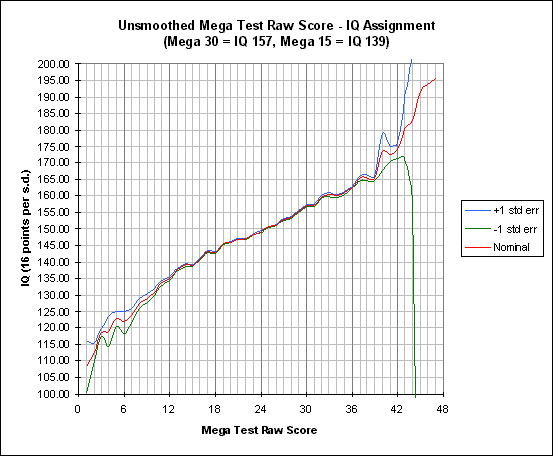
Intelligence filter operative in the Mega test sixth norming:
We have examined the effects of IQ filtering to assess the extent to which the Mega test applicants differ from the general population. The results show those selection pressures result in filtering who will respond on such tests such that the probabilities of submitting a test for scoring increases dramatically with the resultant scoring percentile itself over a quite extensive range of scores. This phenomena has amazed us at times in our deliberations as indicating that individuals have a very good built-in "feel" for the degree of their own intelligence and perform a very critical self-selection evaluation prior to submitting such a test.
The distribution of scores on the Mega test are quite obviously not distributed according to a normal distribution as shown in figure 8 below. There are many more nominally high scores than a normal would accommodate. This fact has been challenged as reason in and of itself for invalidity and "inflation" of the Mega norming. See for example, Paul Maxim's "Renorming Ron Hoeflin's Mega Test" (Gift of Fire, Issue 79, October 1996). We feel that this criticism without further supporting evidence is invalid, however, because -- quite simply -- a random sample of the general population do not submit responses to the Mega test and the extent of the selection was underestimated in the article. In fact, respondents are filtered by their own and other quite extensive pressures such that an extremely selective sampling takes place -- much more effective (as far as elevating the mean) than a simple cutoff band pass filter. Refer to the article by Fred Vaughan also appearing in Issue 79 of Gift of Fire called "Intelligence Filters" and in the mathematical methods section of this report for an explanation concerning the characteristics and effects of such selective filters.
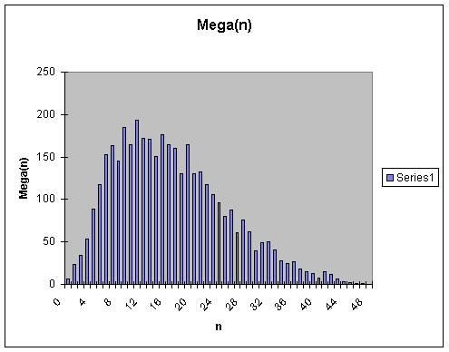
If Mega(n) is the number of people who scored n correct on the Mega test and NT is the total number of people who took the test. Then the conditional probability that someone would score n on the Mega test given that they took the test is obviously approximated by the frequency data:
P(n; take test) = Mega(n) / NT
But, of course, to address the cutoff criteria of 1-in-30,000 of the general population, what we need to know is what would the frequency distribution PIQ(n) be if the test were administered to a large random sample of the general population, NP. The mathematical treatment of an intelligence filter provides this conversion such that:
P(n; take test) = F(n) * PIQ (n), so that,
F(n) = MegaIQ(n) / ( NT* PIQ (n) ), where it is assumed that
PIQ (n) = NORMDIST(n,100,16,TRUE),
when n is rescaled to a standard IQ score obtained on the Mega.
The Mega test does not result in a uniform scaling of IQ vs raw score. For example, the IQ 100 conversion is to a raw score of 1 on the Mega. IQ 116 (one sigma) is at raw score of 4; IQ 132 (two sigma) is at raw score 9; IQ 150 (three sigma) is at a raw score of 24; IQ 164 (4 sigma) is at a raw score of 36; and so on with a standard deviation that increases with score. (This nonlinearity of scaling was taken from the fourth norming of the Mega.) The distribution of the sixth norming was "linearized" by spreading the data to obtain MegaIQ(n) from Mega(n) using the fourth norming IQ assignments. This was done using a simplistic algorithm for proportionately dividing Mega(n) among associated IQ increments to obtain MegaIQ(n) without smoothing. A selective filter on the normal distribution of the general population applies exclusively to MegaIQ(n).
In this way it was determined that the number of individuals in the assumed general population from which selection for taking the Mega occurs is on the order of 3 million people, i. e., the number of those who score above the 164 cutoff IQ is appropriate to a normal distribution with NT = 2,850,000 people. See figures 9 and 10 below which plots MegaIQ(n)/PIQ(n) as well as the hypothesized selective filter using both log and normal scales. An accumulative error function distribution used as the selective filter is plotted in the azure circles. The error function seems to be an excellent fit throughout a quite extensive range of scores as can be seen on a log scale and accounts fully for the preponderance of high scores on the Mega as can be seen.
The equation of the Error Function filter, using Excel nomenclature is:
F(n) = NORMDIST(n,M,s,TRUE),
where the mean, M = 162, standard deviation, s = 13.4. The effective population size being filtered is NP = 2,850,000. So although there is a very restricted set of individuals who actually respond to the Mega there is a fairly large arena from which only the undaunted actually submit responses for scoring. The arena size no doubt derives in part from national exposure of the "World's Toughest IQ Test" (OMNI Magazine, X, X -- anyone have this reference?) and an Internet presence. Although the filtering is much more intense than that for the SAT, the general form of the filter is quite similar. One could speculate with regard to the rationale for the filter form being as it is, but the Membership Committee has not formulated a position with respect to that.
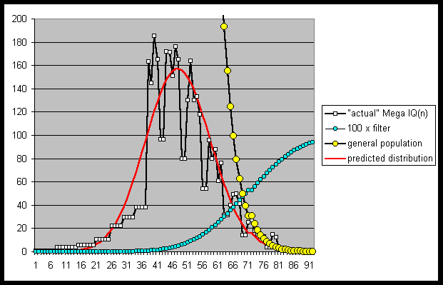
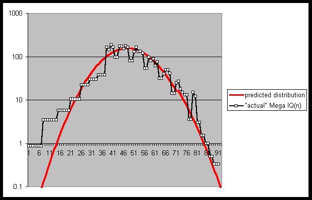
g loading of the Mega test sixth norming:
Using the Easy Factor program, a Principal Components Analysis was performed on the sixth norming of the Mega data. The loading on the first factor, which is reasonably interpreted as being g, is 0.62. This is a reasonably high loading since we are basing this analysis on data that was not randomly selected, and, does not represent the full range of intelligence. The g loading of the test is a bit lower than it would be if it were a test with many more easy problems (with multiple choice answers) that are solvable by a wider range of the population.
In a communication of one of our Membership Committee members with Grady Towers concerning an analysis he performed some time ago based on 46 individuals who had reported scores on both the LAIT and Mega, he reported finding that the Mega (partitioned into "verbal" and "non-verbal" portions) was g-loaded as follows:
|
|
|
|
|
|
|
|
|
|
|
|
|
|
|
|
|
|
"negatives" with regard to the Mega test:
In the interest of all opinions and data being presented, we have tried to fairly represent the positions of detractors of the Mega test. These positions are not necessarily considered to have invalidated the test even by their proponents, but merely have been expressed concerns that needed to be evaluated.
The initial period in the Mega test formation consisted of gathering self reported IQs on other IQ tests taken by a highly selective group of participants in the Mega test. These were provided by a group of only 97 people to obtain norming data. This has been deemed reasonable considering the severe constraints on developing such a test. Although, an estimate of standard error of measurement and an estimate of test reliability which emphasize the tentativeness of mental measurements rather than their exactness have not been established. This was cited by Roger Carlson in his article, "The Mega Test" (Test Critiques, Volume VIII, 1991). The Mega test's problem in determining construct validity derives in part from the nature of self-reported and self-selected IQ scores used for the norming. Greg Scott's article "For Acceptance of Mensa Supervised Tests" (Gift of Fire, Issue 99, September 1998) addresses this fault. If not handled very carefully, self-reporting could easily produce an elevated norm. It should be noted, however, in reference to figure 21 presented farther on in this report, that where both SAT and GRE scores have been reported, equipercentile equating between those two-test scores is extremely good, indicating that if disingenuous tactics were employed, it involved a concerted effort by many individuals -- we think that unlikely.
There are also criticisms for using non-random sample composition. There is no data concerning the nature of the sample composition with regard to who takes the test, and who sends in score-pair norming data and this does not enable one to assume that potential sample errors are insignificant. Although it should be stated that this is in part, mitigated by the use of IRT methods to scale ability levels and maximum likelihood scoring analyses, which are, in principle, independent of sample composition.
A related problem comes from the fact that test results have shown increases over the years. (Refer to 8.3.2 above where this is assessed with regard to scores of new members over the years which appeared to involve minimal creep.) This may well be related to answer leakage, access to the internet and computer technology. This does undermine the validity of the Mega norming. The Mega 27 has been an attempt to deal with some of these problems. Criticisms about the test's ability to make fine discriminations at high ranges are lessened by the nature of the Mega test norming, in the middle range, which has about 1.2 scaled points for each raw point. The norming data shows the test to discriminate quite reliably near the 3-sigma level of ability in the general population.
However, there is a problem with the Mega scores in comparison to scores from standard IQ tests which reveal a wide scatter, resulting in correlations which are weak. These are low correlations compared to the correlations between standard IQ tests which are normally in the range of 0.7-0.8. The Mega correlations with recognized tests such as the Cattell, Stanford-Binet, CTMM, and WAIS are 0.562, 0.374, 0.307, and 0.137, respectively. The correlation with the SAT which was used heavily for the sixth norming is only 0.495. A correlation around 0.4 is considered to be weak. Note, however that these correlations are uncorrected for range restriction and for attenuation due to imperfect reliability. A possible reason for the very low correlation with the WAIS is the low ceiling (150).
Also note that some of the tests against which the test was normed either have low ceilings (WAIS) or normings that are likely to be inaccurate past IQ 150 (Stanford-Binet). At the high end there is even greater discrepancy between scores. This undermines to some degree claims of validity in measuring IQ with the Mega test. However, the average SAT score of those with a score at or above 36 on the Mega test is 1498, leaving considerable room before reaching the ceiling of the test but leaving some doubt as to why there were not more extremely high high SAT scores. Another analysis by Grady Towers reveals that the Mega Test does not load high on fluid g, but much higher on crystallized intelligence. This runs counter to an interest in selecting for fluid g at the 1-in-30,000 level.
It is not unreasonable to assume that the Mega test could reliably discriminate scores in a range of at least +/- 1 sigma about its 50% correct score. From a Mega standard score of 100 to Mega standardized score 116 (one standard deviation), the percentile ranking changes from 50 to 84 (34 percentile points); contrast this with the change in percentile ranking from Mega score 148 to Mega score 164, which is also one standard deviation -- the percentile ranking changes from 99.87 to 99.997, a difference of only .127 percentile points. Were we to adhere to traditional usage of percentile scores, we would designate all scores above the 99th percentile as "99+," which is not very useful. But, supporting the Mega test's ability to discriminate at the very highest levels of g (low correlation with other IQ tests, in addition to Spearman's law of diminishing return), is significantly problematic.
The Mega test has not been normed on large populations and unlike standard IQ tests (which may have had comparable population sizes for norming, it aspires to validity at a much higher rarity. It has in turn been normed on these tests which also have insufficient populations. If there are problems with right-tail bumps at the high end of standard IQ tests, then the Mega test can not claim immunity from such phenomena.
The test does not have any built in controls over what goes on in the testee's mind providing the necessary probability that an item is measuring specific cognitive processes. There have been continous and possibly legitimate complaints that the Mega test measures resourcefulness, tenacity, time available, motivation, access to applicable reference material, habitual cognitive strategies or algorithims, specialized knowledge, use of computers, rather than a general form of innate cognitive ability. See for example David Slater's article, "Some Thoughts on Super High IQ Society Admission procedures" (Gift of Fire, Issue 100, October 1998), Kevin Langdon's "Reply to Dave Slater on Test Design" (Gift of Fire, Issue 102, January 1999) and Don Johnsons "Intelligence Testing and the Ego" (Gift of Fire, Issue 100, October 1998).
Ultimately, the facts surrounding its being a non-proctored take-at-home test will always leave questions concerning the degree to which the applicant followed the ostensible rules of the test. Demographics of members of the Prometheus Society suggest that little collaboration among test takers has affected participants at this level.
8.4.2 Mega27 -- A Short Form of the Mega Test
Our efforts with regard to the Mega27 test have been an effort devoted to obtain an approach to work around the leakage of answers to the Mega test by eliminating compromised problems and the very easiest problems that remain. It uses the remaining unleaked and harder problems to assess the applicants' credentials. Considerable progress has been made by the Membership Committee in assessing this potential using correlations with the original sixth norming of the Mega, Item Response Theory (IRT), maximum likelihood scoring techniques and factor analysis. In addressing this issue, it seemed prudent that additional problems which are much too easy to discriminate at the 1-in-30,000 level should also be eliminated. In this way we obtained a "Mega27 Test". This test retains only 27 rather than the original 48 test questions. This approach will also forestall the inevitable compromise of these easier problems thus extending the useful life of the Mega for our purposes. The results seem extremely promising as described in the following paragraphs.
Correlation between Mega27 and Mega48 Score Pairs:
Figure 11 provides the correlation of score pairs for the Mega27 and the Mega48. The fact that the correlation is strong is not surprising. A raw score of between 19 and 20 seems to compare favorably with the Mega score of 36. Figure 11 illustrates that a score of 21 on the Mega27 excludes eleven (11) participant who scored 36 or greater on the Mega48. However, a score of 36 on the mega48 excludes only two (2) participants who scored 21 or greater on the mega27. The mean Mega27 score of the 11 excluded participants scoring 36 or more on the Mega 48 was just over 37, whereas the mean of the 2 included was 34. In short, the Mega27 cutoff of 21 would be (to the extent that it is any different) more restrictive than a Mega48 cutoff of 36. This data indicates that the 1-in-30,000 criterion is easily maintained (and in fact made more plausible) in going to the short form of the test if a Mega27 score of 20 correct out of the 27 is used.
IRT analysis of the Mega27:
Figure 12 provides similar data for the Mega27 to that provided in figure 7 for the Mega. Figure 12 illustrates that the Mega27 is more reliable at both ends (including down around 130 IQ and up around 170 to 175 IQ) than the Mega48. This data illustrates that the 1-in-30,000 criterion is easily maintained (and in fact made more plausible) in going to the short form of the test. The 1-in-30,000 level on the Mega27 is a score of between 21 and 22 correct out of the 27 (the score 21 correlates closest to the Mega48 score of 36) as is easily seen in the two figures. When this analysis is taken in conjunction with the correlation data shown above, the raw score of 21 seems to be a reasonable assignment.

Maximum likelihood scoring of the Mega27 in comparison with the Mega48:
As further justification of this step, the following figures illustrate
the comparison of the traditional scoring of the Mega with a maximum likelihood
method based on the unique difficulty profiles of the individual test items
and probabilities of correctly answering the questions. The top fifty or
sixty scorers in the Mega sixth norming data set are represented in the
two figures (13 & 14) below. Again, as can easily be seen, the results
are "more regular" and seem more reliable with the Mega27 than with the
original Mega48. In particular, for the Mega48 there are 17 instances (30%)
where the assigned score is higher than for another individual whose
probability-based score is higher. Some of these discrepancies are as large
as two raw score points. In contrast, for the Mega27there are only five
such scores with only a single one exceeding a full raw score point.


When 50% confidence levels are applied to maximum likelihood scores for both the Mega48 and Mega27, the Mega48 interval is about +/- 4 raw score points. The mega27 is about 1/2 to 2/3 of that amount which is to be expected because the variation depends on the problem profiles which are virtually identical in both cases. If these results were iterated, the maximum likelihood scores would have been "smoother," but the the point is still the same: The Mega27 score which we will be recommending appears to be even more reliable than the Mega48.
g loading of the Mega27:
Factor analysis on the Mega27 actually resulted in an insignificant increase in weighting on the principle component (that can be interpreted as g). To two-decimal places, this g-loading is now 0.63. It seems apparent, therefore, that g loading has certainly not been sacrificed in cutting the Mega test down to 27 questions. Again, we must remember that this analysis was performed on data that was not randomly selected, and, does not represent the full range of the normal distribution of the general population. The assessed g loading of the test is, therefore, a bit lower than it would be if it were performed on a test with many more easy problems that are solveable by a wider range of the population. However, it is worth noting that by taking out the easiest seven problems on the 48-item Mega, we do not seem to have adversely affected the g loading.
agreements for scoring the Mega27:
It is essential that the test developer and scorer, Dr. Ronald Hoeflin, agree to the modified use of his test and the added imposition of providing the unique Mega27 score specifically for the Prometheus Society. Several alternative approaches to obtaining this have been proposed to Dr. Hoeflin. We are currently in negotiation with Ron and it would appear that he is in basic agreement with our approach.
The Titan test was also developed and is scored by Dr. Hoeflin. It is also a 48-item take-at-home test modeled much after the Mega.
Certainly, we would like to have been able to provide item analysis and at least been able to review norming data for the Titan, but even without that analysis and data, some of us expressed comfort with continuing to use the Titan for admissions at the present time if it had not been for known compromises based on the following considerations.
There are the matched-pair data which provides the scores of 114 subjects on both the Mega and Titan test. See figure 15 below. The mean of the Titan raw scores in this set is 20.1 and the mean of the Mega raw scores is 22.3. The difference between means was highly significant (p>0.001) according to a t-test. So across the full range of scores, the Titan is, perhaps, two problems tougher. The correlation between tests was 0.82.
Examining the raw scores of the subjects with combined Mega and Titan raw scores of 48 (n=46) -- people near the Prometheus Society membership criteria interest range -- reveals that the means of the two tests for that group were Mega= 31.4, Titan =31.3. The difference between means being statistically insignificant, as one might expect.
Figure 15 shows a correlation between scores of individuals taking both the Mega and Titan. Using score pairing equipercentile equating methods for calibration, the fourteenth Titan test score was a 36 and the fourteenth Mega score was a 35. See figure 16. The 46th Titan score was a 24 and 46th Mega score was also a 24 -- a fairly close pairing.
A consensus opinion of those on the committee having done both tests, is that the Titan is 2 to 3 problems harder than the Mega. The statistical evidence, however, seems to indicate that the Mega may be a bit more difficult, but at the higher ranges we are trying to measure, they are almost identical. It is interesting that Ron Hoeflin also has characterized the Titan as more difficult at the lower range, and equivalent at the upper end.


The Titan appears to be less compromised at this point in time than the Mega -- our impression is that most people that examine both tests opt to use the Mega because the Titan appears more
difficult at first glance and, perhaps, "less fun". Answers to the Titan problems have on occasion appeared on the Internet over the last couple of years. A serious problem in this regard is that we cannot perform item response (IRT) or other analyses necessary to develop a sub-test. We do not even have enough data to effectively check its characteristics.
According to data supplied by the membership officer, very few people have been admitted to Prometheus by the Titan, so evidently people aren't "leaking in" due to this test being too easy or answer leakage being too severe as of yet.
We feel that it is most unfortunate to have to recommend suspension of this test from our qualification list at this time and hope that sufficient data will be provided in the near future so that the test can again be certified for use by the Society. Ron has assured us that he will provide the data so that we will be able to add an addendum to our recommendation if the data warrant the Titan's retention in some form. However, as of this time there is insufficient data to work around the known compromises to this test and we must stop the leak.
8.4.4 LAIT (scored before Dec. 31, 1993)
The norming data on the LAIT has not been made available to this committee by the test developer. However, since the LAIT is no longer being scored, having been retired some time ago when its answers were published, we are not concerned about continued Prometheus Society criteria erosion vulnerabilities due to this test. Many members have been accepted into the Society based on scores on this test in the past and members of record at two dates in the past have been assured entry to the Society so it seems reasonable to retain LAIT scores obtained prior to Dec. 31, 1993 as satisfying entry criteria.
There have been legal problems and some controversy with regard to the legitimacy of this test, but we do not believe that these are of much concern since the test is no longer being scored.

Cursory review of Kevin Langdon's 2nd norming of the LAIT together
with more recent data relating LAIT scores to Mega scores as shown in the
following figure 17 has persuaded us that it is reasonable to retain a
LAIT-IQ score of 164 as satisfying the 1-in-30,000 of the general population
criterion, though it would have been nice to have had more data.
g loading of the LAIT:
The following excerpts are from Grady Towers's "Letters to Kevin Langdon" (Noesis 131 -- Special Issue on Psychometric Issues, 11, September 1998). Grady discussed LAIT/Mega analyses in the "3rd" leter dated 4/28/98, factor analysis in his "4th" and "5th" letters dated 7/27/98 and 8/24/98. He wrote:
There are two kinds of factor analyses extant in psychometrics: Principal Components Analysis and Common Factor Analysis. Common factor analysis is the preferred method.
What I did was to factor analyze the correlations between the LAIT and 24 Verbal items on the Mega Test, with 12 Spatial items, and 12 Numerical items. I found two important factors: the first column represents g loadings, and the second is a verbal/non-verbal bifactor.
|
|
|
|
|
|
|
|
|
|
|
|
|
|
|
|
|
|
|
|
|
|
|
|
|
|
|
|
|
|
|
|
|
|
|
|
|
|
|
|
Kevin's reply is an article entitled "Reply to Grady Towers" (Noesis 131 -- Special Issue on Psychometric Issues, 16, September 1998).
A couple of caveats are in order. First of all, the SAT has changed fairly substantially over the years. The analyses that we have performed and the use to which the SAT has been put in norming other tests in this report involves exclusively what we call the "old" SAT. To distinguish this version, it is essential to note that: The "new" SAT has been deployed since April 1, 1995. The "old" SAT was administered prior to that date.
The maximum score of 1600 on the new SAT V+M appears to map to the score range of 1510 to 1600 on the old SAT. Given the shape of the score frequency distribution in general, we believe that most 1600's on the new SAT would fall below 1560 on the old SAT. For example, 453 out of 1,127,021 students who actually took the test in 1996-7 (probably representing some 3.5 million total 17 year olds) scored 1600 on this new SAT. This is about 1 out of 7,726 that would correspond to about a 158 IQ. We have yet to see sufficient statistically reliable data on the numbers of participants receiving these high scores from one year to the next on the new SAT, but until and unless these reveal something other than we anticipate from what we have seen, the new SAT is definitely not suitable for our purposes.
8.5.2 The SAT data correlations with IQ
The SAT does correlate highly with g. This is discussed by Arthur Jensen in The g Factor. Jensen says on pages 559-560 that, "Data obtained from 339 college students support the notion that much of the variance in SAT scores can be attributed to g (it is unclear from the text whether pre or post recentered SAT scores were used). College students are a somewhat restricted sample, so it would be expected that if the sample was the entire population, the correlations could be even higher. The g-loading of the SAT-M is shown as .698, and the g-loading of the SAT-V is .804. The g-loading of most IQ tests is around .80. Another source, Nicholas Lemann, estimates in an article, "The Great Sorting" (Atlantic Monthly, Sept. 1995) that the correlation between the verbal score and IQ is .60 to .80.
8.5.3 Cautionary notes and considerations
There are cautionary notes to be added, though: g-loading is both a function of the test involved and the population being measured. Jensen's data was obtained from a small sample of college students (it is reasonable to view this as a controlled condition due to the population being entirely represented by college students -- this could provide a control for other significant factors that affect SAT scores. The size of the population used in the ETS data has not been specified. According to Thomas J. Bouchard (a widely recognized researcher in the U.S. at the University of Minnesota studying IQ correlations between monozygotic twins), research in correlating IQ with SAT scores has been inconsistent. The Standford Binet and SAT have been found to correlate anywhere between .445 and .8. The WAIS and SAT correlations fall in about the same range according to Bouchard. While the SAT and other college admissions tests may be adequate measures of g for small homogeneous populations, e.g., group of native-English-speaking US students that have had an almost identical academic background that would include learning vocabulary lists and four years of high school math (the test uses no higher than 9th grade math), and who also have had similar lifestyles and academic motivations. These limitations clearly preclude the SAT from ever becoming the sole test from which to select members world wide.
While most cognitive abilities tests are influenced by education and cultural factors, SAT tests, because of their more specific academic focus, are probably less effective in measuring "g" for people who fall into categories that one finds in more diverse populations (e.g., unsuitable education, lack of motivation to learn required subjects -- verbal/mathematical, or those suffering from math phobia, attention deficit disorder (ADD), depression, dyslexia, adverse effects of exam pressure, young children, foreign examinees, etc.). However, these conditions probably also significantly reduce the possibility of interest in membership in Prometheus.
Finally, it is possible that scores can be increased without a corresponding increase in g through long-term study undertaken with the specific goal of raising test scores (as of yet there is insufficient data on this). Individuals may be able to put in extra study and practice relative to the normal comparable population and considerably improve his/her mathematical and verbal aptitudes. In this regard, long-term coaching should be distinguished from short-term coaching; research on the latter by the College Board indicates that short term coaching produces scores that are within the standard error of the test. See http://www.collegeboard.org/press/html9899/html/981123a.html. It is also worth noting that some minimal study and coaching are fairly typical of SAT participation so that such may be the norm which is already taken into account in the general population distribution.
Discussion by Messick and Jungblut in "Time and method in coaching for the SAT" (Psychological Bulletin, Vol. 89, 1981) provide an argument against the efficacy of coaching to obtain uncharacteristic high scores. Discussion of the issue on pages 400-402 in The Bell Curve cites this paper; there is an excellent graph on p. 401 showing score increments for the SAT-V and SAT-M plotted in separate curves vs. hours of study.
Some facts from the text and the graph:
| hours of study | Verbal | Math | Total |
| 30 | +16 | +25 | +41 |
| 100 | +24 | +39 | +63 |
300 hours of study might be expected to reap a 70 point increment on the combined score, 600 hours 85 points.
The cited article is a review of all studies done to that date on this issue. These documented improvements involve the average increments at all levels and are therefore weighted for differences occurring at the average level; increments at the high end of the scale must certainly be less. One would do well to remember that coaching for the SAT is a profitable mini-industry in the U.S. Extravagant claims are to be expected on a routine basis from this industry (as for any other).
Rebuttals to this study are available like The Princeton Review (The studies are intra-institutional like studies by ETS - information about these studies can be obtained by contacting The Princeton Review directly or found in books published by Princeton Review) which claims to provide unbiased studies that prove significant improvement is possible (well over 200 points). (Other material that explores this issue are available by Samuel J. Messick in "Effectiveness of Coaching for the SAT" and "Individuality in Learning". Similar criticisms to those of extravagant gains have been made about the claims put forward by Hernstein and Murray. See for example, Measured Lies: The Bell Curve Examined; Cracks in the Bell Curve; Intelligence, Genes, and Success: Scientists Respond to the Bell Curve 'Statistics for Social Science and Public Policy'; Inequality by Design : Cracking the Bell Curve Myth; The Bell Curve Debate; History, Documents, Opinions; The Bell Curve Wars.) Also, ETS have sometimes been accused of biased statistical approaches that may significantly influence conclusions obtained. See for example, Stephen Levy's "ETS and the Coaching Cover-up," in the March 1979 issue of New Jersey Monthly.
While all members of the Membership Committee acknowledge that there are valid criticisms of the SAT, we are in general agreement that these criticisms are insufficient to preclude its use for our purposes.
8.5.4 Intelligence filter operative in selection of SAT participants
It is well known that the SAT is administered selectively to high school age students in the US. On page 35 of The Bell Curve it is stated that, "By 1960, a student who was really smart -- at or near the 100th percentile in IQ -- had a chance of going to college of nearly 100%." There is a graph on the same page showing three curves for percentile IQ vs. percent of college attendance. The curves are for the 1920s, early 1960s and early 1980s. From the graph, it appears that in the 1980s and in the 1960s, a student at the 96 percentile IQ had about a 92% chance of attending college (and, by implication of taking the SAT).
From the notes in The Bell Curve on page 692, note 7: "...from top quartile [of PSAT scores], 79% went to college; of those in the top 5%, more than 95% went to college." The data in the first example used IQ scores, not SAT scores.
There is another graph on p. 37 showing two curves, one for students entering college, one for completing the B.A. as a percentage vs. percentile IQ. Quote from p. 36: "...Meanwhile about 70% of the top decile of ability were completing a B.A."
For the graph on p. 35 of The Bell Curve, the curve for the 1980s is drawn from data from the National Longitudinal Survey of Youth. This study, the backbone of much data in The Bell Curve, used IQ not SAT for its cognitive ability estimate.
As the curves in these graphs show no signs of "bending over" at the higher IQ ranges, this ought to allay fears about appreciable numbers of people at the top not taking the test. See for example, figures 19 & 20 below.
We have examined the effects of selective intelligence filtering to assess the extent to which participants differ from the general population. Only about one in three seventeen to eighteen year-olds in the US take this test although virtually all "college bound" students do take it. Filter assessment has been assisted by the availability of the National High School (NHS) survey that assessed the distribution of all students independent of whether they would have taken the SAT otherwise.
Figure 18 shows the frequency distribution of college bound students for a given year.
The distribution of scores are again quite obviously not distributed according to the normal distribution although the skewing is less than for the Mega. There are again many more nominally high scores than a normal distribution would predict. In figure 19, which is described in more detail in the selective filter methodology description of section X, the effective filter is shown on an enlarged scale as the roughly diagonal curve indicating progressively intense selection based on intelligence. The deviation at the bottom is obviously because students with excessively low IQs do not even attend high school and therefore were not even included in random samples. See Kjeld Hvatum's table presented in section 8.3.3 where the range of retadation is shown to extend well into the score levels on the SAT which are effectively missing.
The degree to which this composite filter fits the SAT data is shown particularly well in the plot on a log scale shown in figure 20. The similarity in form of this filter and that which is evident in the Mega data suggests that many of the same type of pressures must exist and again, that individuals are capable of very accurate assessments of their own cognitive abilities.

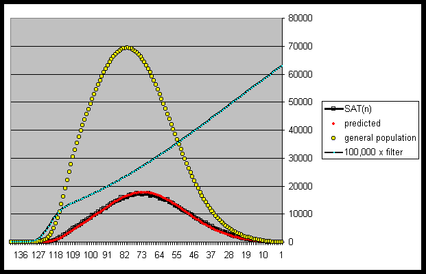
It is interesting that Kjeld Hvatum in his "Letter to Ron Hoeflin" (In-Genius, Vol. 15 ,August 1990) says,
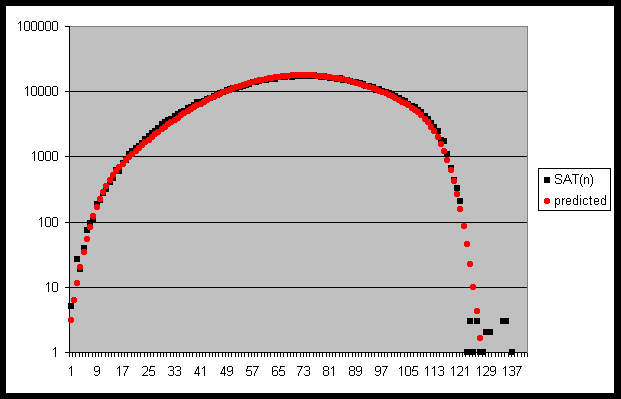
This is very essentially what we have found, but one cannot just assume that the top 1/3 of the overall US high school population takes the SAT as shown in the figure above -- it is more complicated and the filtering more effective than that.
8.5.5 The ability of the SAT to discriminate at the high end of its scale
The graphs in figures 21 and 22 below show that the SAT has the ability to discriminate throughout its complete range of raw scores. Figure 21 shows a slight non-linearity between raw vs. scaled scores starting near a total score of 1540. On other administrations of the test (see figure 20) the questions are evidently more difficult and the raw vs. scaled graph is linear all the way to the top, suggesting that the test is indeed discriminating through its complete range.
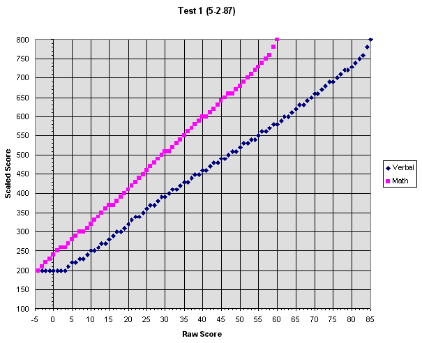
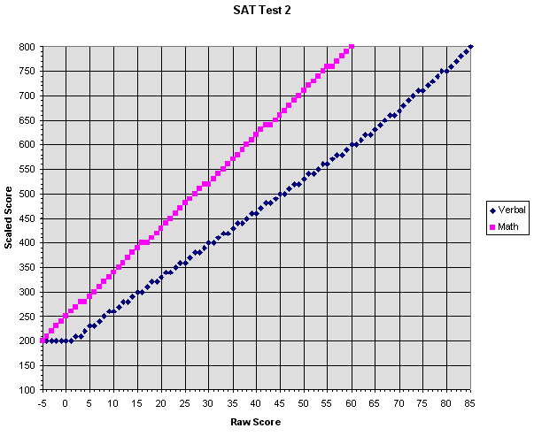
The difference between 1600 and 1560 is typically 2 to 4 problems on the "old" (pre-recentered) SAT. However, when figuring percentile equivalents for the SAT, it should be remembered that it is based upon a sample size of approximately 1 million actual test takers selectively sampled from a general population size in excess of 3 million. It isn't unreasonable to assume that the general population percentiles that we assign to the SAT at the top end (for which selection is the highest) are accurate for the test group as a whole. In fact, however, in a population of 3 million there should be over 100 individuals scoring at the 1-in-30,000 level. On any given year less than ten individuals obtained a perfect score on the old SAT with on the order of 100 or less scoring 1560 or more and, therefore, it is is safe to say that the 1-in-30,000 level is achieved by these individuals.
8.5.6 Establishing a credible 1-in-30,000 of the general population raw score cutoff
As indicated throughout this report, we have chosen not to accept theoretical positions on what the distributions of test scores will be at the high end of the psychometric range nor even if it is intelligence that is being discriminated at the extreme tails of distributions, preferring actual data to accepted notions and legitimate claims of rarity to unverified claims of "super intelligence." In keeping with this philosophy, we note that of three million people in the general population for which a single SAT applies, 100 would satisfy the rarity condition. Therefore, for a given year, looking down the top 100 scores, we find for example for 1984 combined V+M for College-Bound Seniors:
| Score | Number |
| 1600 | 5 |
| 1590 | 0 |
| 1580 | 27 |
| 1570 | 19 |
| 1560 | 39 |
| 1550 | 75 |
| 1540 | 96 |
| 1530 | 108 |
| 1520 | 188 |
| 1510 | 217 |
| 1500 | 278 |
| Score Range | Number |
| 1591-1600 | 35 |
| 1581-1590 | 8 |
| 1571-1580 | 149 |
| 1561-1570 | 71 |
8.6.1 Mensa testing approaches
Because of much greater membership, Mensa can afford quite extensive testing programs. Facilities and psychometric instruments are available throughout the world. In much the way that this committee is attempting to assist the Prometheus Society in establishing tests that it can warrant with credibility, Mensa accepts scores on various tests -- which change from time to time.
It is understood in this regard that Mensa's discrimination problems are much less demanding than ours because of their considerably lower qualifying standard. They do provide a paradigm, however, and if it were possible to tap into their resources and global support, it would have considerable merit. Greg Scott addressed this possibility in his article, "For Acceptance of Mensa Supervised Tests" (Gift of Fire, Issue 99, September 1998). We have, therefore, considered tests whereby individuals may be qualified for entry to Mensa. We have also considered counter arguments as put forth by Kevin Langdon in his article "Mensa Tests and Other Standard Tests" (Gift of Fire, Issue 81, January 1997) that was in response to Greg Scott's article as well as other issues that we have encountered.
You will see these various lines of reasoning pursued in the following sections.
8.6.2 Cattell Culture Fair III
Cattell Culture Fair III (A+B) has a history of use since the early 1920s, but the present edition is dated 1960 and was revised in 1963. Mensa used this test prior to its latest adoption of the Raven Advanced (both tests are still used by Mensa in the UK although now dropped in the US).
The features of this test are as follows:
88 for IQ 165
89 for IQ 167
90 for IQ 168
91 for IQ 169
93 for IQ 173
95 for IQ 176
97 for IQ 179
99 for IQ 183
100 for IQ 187 (extrapolated)
The following are features of the test:
8.6.3 Raven's Advanced Progressive Matrixes (RAPM)
Raven's Advanced Progressive Matrixes is one of a series of nonverbal tests of intelligence developed by J.C. Raven (1962). Following Spearman's theory of intelligence, it was designed to measure the ability to educe relations and correlates among abstract pictorial forms and it is widely regarded as one of the best available measures of Spearman's g, or of general intelligence (e.g., Jensen, 1980; Anastasi, 1982). As its name suggests, and of particular significance to the Prometheus Society, it was developed primarily for use with persons of advanced or above average intellectual ability.
Like the other Raven's matrices tests, the APM is composed of a series of perceptual analytic reasoning problems, each in the form of a matrix. The problems involve both horizontal and vertical transformations: Figures may increase or decrease in size, and elements may be added or subtracted, flipped, rotated, or show other progressive changes in the pattern. In each case, the lower right corner of the matrix is missing and the subject's task is to determine which of eight possible alternatives fits into the missing space such that row and column rules are satisfied. The APM battery consists of two separate groups of problems. Set I consists of 12 problems that cover the full range of difficulty sampled from the Standard Progressive Matrices test. Standard timing for Set I is 5 minutes. This set is generally used only as a practice test for those who will be completing Set II. Set II consists of 36 problems with a greater average difficulty than those in Set I. Set II can be administered in one of two ways: either with or without a time limit of 40 minutes. Administering Set II without a time limit is said specifically to assess a person's capacity for clear thinking, whereas imposing a time limit is said to produce an assessment of intellectual efficiency (Raven, Court, & Raven, 1988).
Phillip A. Vernon, in his review of the APM (Test Critiques, 1984) writes that "the quality of the APM as a test is offset by the totally inadequate manual which accompanies it. For interpretive purposes, the manual provides 'estimated norms' for the 1962 APM which allow raw scores to be converted into percentiles (but only 50, 75, 90, and 95) and another table for converting percentiles into IQ scores." John Johansen, a graduate student at the University of Minnesota and former regular poster to the Brain Board, came into possession of the 1962 version of the test for use in his research (this form is no longer used for testing) along with 27 pages of written text about the implementation, scoring and standardization of the test. In a post to the Brain Board at (http://www.brain.com/bboard/read/iq-archive3/1599), he provided the following information applicable to the untimed 1962 version of the test:
Untimed intraday (go until you give up) 1962 distribution for 20
year olds, 30 year olds and 40 year olds. Scores balanced for guessing.
|
|
|
||
|
|
|
|
|
|
|
|
|
|
|
|
|
|
|
|
|
|
|
|
|
|
|
|
|
|
|
|
|
|
|
|
|
|
|
Ignoring the above caveat about inaccurate norms above the 99.9th percentile, the above data indicates that there is about a 4 point raw score difference between 2 and 3 sigma on this test. If this difference carries on to the next "sigma," this would give associated scores of:
|
|
|
||
|
|
|
|
|
|
|
|
|
|
Bors and Stokes administered the timed version of the APM to 506 students (326 women, 180 men) from the Introduction to Psychology course at the University of Toronto at Scarborough. Subjects ranged in age from 17 to 30 years, with a mean of 19.96 (standard deviation=1.83). Enrollment in the Introduction to Psychology course was considered roughly representative of first-year students at this university. The scores on Set II for the 506 students ranged from 6 to 35 with a mean of 22.17 (standard deviation=5.60). This performance is somewhat higher than that of the Raven's 1962 normative group but considerably lower than Paul's 1985 University of California, Berkeley sample.
Additional data supporting the conclusion that the RAPM (either timed or untimed) does not discriminate at the 1/30,000 level is taken from Spreen & Strauss (Compendium of Neuropsychological Tests, 2nd Edition, 1998), and shown in the tables below.
A middle-of-the-road approach would be to use the recent University of Toronto at Scarborough data and to assume that the mean of the test group corresponds to about 1 SD above the mean of the general population, and to further assume that the SD of the general population would be about the same as the standard deviation of the test group. Finally assuming a normal distribution in the test group, the 1-in-30,000 level would correspond to 22.17 + 3 * (5.60) = 39, which is 3 raw points above the test's ceiling of 36.
|
|
|
|||||||||
|
|
|
|
|
|
|
|
|
|
|
|
|
|
|
|
|
|
|
|
|
|
|
|
| untmd. | 40 min | 40 min | 40 min | 40 min | 40 min | 40 min | 40 min | 40 min | 40 min | |
| (n=71) | (n=195 | (n=104) | (n=104) | (n=157) | (n=49) | (n=52) | (n=104) | (n=61) | (n=34) | |
| 95 | 33 | 29 | 34 | 30 | 34 | 28 | 32 | 34 | 30 | 33 |
| 90 | 31 | 27 | 32 | 28 | 32 | 26 | 31 | 32 | 28 | 31 |
| 75 | 27 | 23 | 29 | 25 | 30 | 22 | 28 | 30 | 25 | 28 |
| 50 | 22 | 18 | 25 | 22 | 27 | 19 | 25 | 27 | 21 | 24 |
| 25 | 17 | 13 | 21 | 19 | 25 | 15 | 23 | 25 | 17 | 21 |
| 10 | 12 | 10 | 18 | 16 | 22 | 12 | 20 | 22 | 13 | 18 |
| 5 | 9 | 8 | 16 | 14 | 21 | 10 | 19 | 21 | 11 | 16 |
The data above does bring up the issue of age variation of IQ data which is not typically addressed by other instruments that we've used for Prometheus Society entry requirements and that is perhaps something that should be considered. (In the case of the SAT and GRE tests, there is not typically much variation in the ages of those taking the test and no such data was used in norming any of the take-at-home tests we've used. Spreen and Strausse have provided the information for the table below:
|
|
|
|||||||||||
|
|
|
|
|
|
|
|
|
|
|
|
||
| (n=28) | (n=53) | (n=72) | (n=77) | (n=121) | (n=69) | (n=33) | (n=36) | (n=27) | (n=33) | (n=54) | ||
| 95 | 32 | 32 | 32 | 32 | 32 | 32 | 31 | 30 | 29 | 27 | 25 | |
| 90 | 30 | 30 | 30 | 30 | 30 | 30 | 29 | 28 | 27 | 25 | 23 | |
| 75 | 27 | 27 | 27 | 26 | 26 | 26 | 26 | 25 | 24 | 22 | 19 | |
| 50 | 20 | 20 | 20 | 19 | 19 | 19 | 19 | 18 | 16 | 14 | 12 | |
| 25 | 15 | 15 | 15 | 15 | 15 | 14 | 14 | 13 | 12 | 10 | 8 | |
| 10 | 10 | 10 | 10 | 10 | 10 | 10 | 9 | 8 | 7 | 6 | 4 | |
| 5 | 7 | 7 | 7 | 7 | 7 | 7 | 6 | 5 | 4 | 3 | 2 | |
Tests completed at leisure. Source: J. Raven (1994)
Curiously, American Mensa does not list the RAPM among its currently accepted tests, although UK Mensa does. Perhaps this is a more "international" test than others we have reviewed and considering its quality, we should probably continue to consider its possible use, especially as an "auxiliary" test to be submitted in conjunction with other tests that are deemed capable of discriminating at the 1-in-30,000 level.
8.6.4 California Test of Mental Maturity (CTMM)
The reliability coefficients are said by Bert Goldman, Dean of Academic Advising at the University of North Carolina, in reviewing the "California Short-Form Test of Mental Maturity, 1963 Revision" in The Seventh Mental Measurements Yearbook, to indicate adequate reliability. He says further that:
No rationale is given for using eight school levels with the Short Form and only six school levels with the Long Form. Further, five factors are included in the Long Form and only four in the Short Form. No reason is given for eliminating the Spatial Relationships factor from the Short Form. However, earlier in this review it was pointed out that among the five factors this one provided the poorest reliability coefficients.
In sum, as far as group tests of intelligence are concerned, the CTMM appears to rate among the best. Its format is clear and easy to follow, its material appears durable, the norms appear representative, and its reliability while being weaker at the lower levels generally seems satisfactory. Data on validity are lacking, but if its shorter version is comparable, then considerable evidence suggests that the Long Form is valid. This leads to a question that has long stood in this reviewer's mind. Why both tests? Why not just the CTMM-SF? The Short Form takes less time to administer than the Long Form, research is available concerning its validity, and in terms of reliability it does not contain the Long Form's weakest factor (Spatial Relationships)."
There are several interesting pieces of data that would seem to suggest the CTMM may be an appropriate test for inclusion on our list. For example, the following score pair data is available on Darryl Miyaguchi's web site for the "OMNI Sample":
LAIT vs. CTMM: 5 cases -- CTMM substantially lower score in every case. Average difference = 12.8 IQ points.
Cattell vs. CTMM: 24 cases -- CTMM substantially lower score in every case. Average difference = 12.6 IQ points.
In neither of the situations described above did the difference seem to be IQ (Mega raw score) dependent! In fact in the data included for that norming, roughly the same number of individuals reported LAIT, Cattell and CTMM scores as follows:
CTMM high scores: 179, 162, 154, 154, 150...total of 30 scores
Cattell high scores: 191, 178, 172, 169, 164...total of 35 scores
LAIT high scores: 171, 170, 169, 167, 166...total of 35 scores
It is noted that in "Mensa Tests and Other Standard Tests" (Gift of Fire, Issue 81, January 1997), Langdon has suggested that the CTMM is inappropriate for admission to our Society because it has "a ceiling of 3.5 sigma," which is in accord with Grove's mention of a ceiling of 158. In no case was a 4-sigma LAIT or Mega score confirmed in the OMNI Sample by a CTMM score. The CTMM scores tend in general to be much lower than the other two as can be seen in figure 4 above. This impression is further confirmed by inspection of figure 6 above where, if CTMM scores were used for norming the Mega, standard scores on the Mega would have to be dropped (as against raised!) by as much as ten points since the CTMM score of 155 corresponds to the Mega cutoff score of 36! Clearly, if anything, the CTMM seems to underestimate IQ at these high scores. However, we have to reject the CTMM because its ceiling of 158 is too low for our entry criterion.
8.6.5 Graduate Record Examination (GRE)
The GRE is comprised of three subtests: Verbal, Quantitative and Analytic sections. Each GRE score is a value that is independent of when the score was obtained. Scores are "scaled" based on performance on the test and the properties of the individual test itself. All General (Aptitude) Test scores are reported on this same scale. A verbal ability score of 550 earned in 1972 will, therefore, for example, be equivalent to a verbal ability score of 550 earned in 1982. Several different editions, or forms, of the General (Aptitude) Test are in active use in the GRE program at any given time. Over several years many different forms will be used. Compensation for variations in difficulty among these forms of the test are taken into account when the number of correct answers are converted to the scaled score. This supports direct comparisons of performance of examinees taking different forms of the test.
The analytical ability measure of the General (Aptitude) Test was revised extensively in 1981, so that analytical scores earned prior to October 1, 1981, should not be compared with those earned after that date. Also effective October 1, 1981, the maximum obtainable verbal, quantitative, or analytical ability score was set at 800 so that V+Q scores in excess of 1600 are no longer possible. ETS advises that when comparing verbal and quantitative scores earned after October 1, 1981, with verbal and quantitative scores earned earlier, earlier scores in excess of 800 should be interpreted as being equivalent to the 800 score maximum.
The GRE is somewhat similar to the SAT in having a wide constituency in the United States and in having verbal and mathematical subtests. It has been shown to correlate well with many standard IQ tests such as (the verbal subtest) with the MAT and in the combined score pairs reported in the norming data for the Mega reported above. The equipercentile equating between the SAT and GRE where both scores were reported by Mega participants is seen to be very good. See figure 23 below. This diagram illustrates that a score of 1610 to 1620 on the GRE (obviously taken before October 1, 1981) corresponds well with a cutoff score of 1560 on the SAT. This is compatible with claims that ETS indicated that they considered 1620 on the older GRE to have been a 4-sigma case.
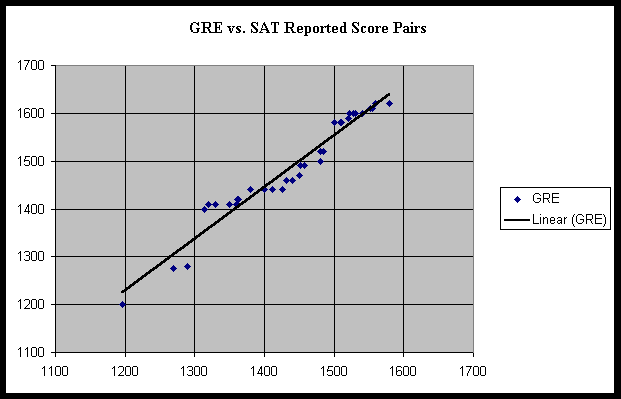
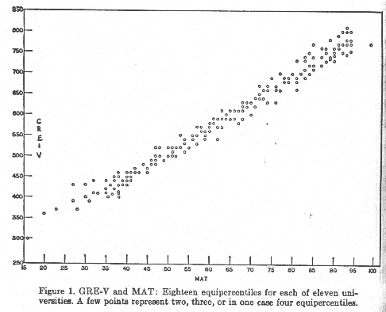
In excess of 400,000 people took the test anually in the early eighties and that number must surely have grown considerably. The actual percentiles (of the filtered population who actually take the test) have been reported by ETS with their usual reluctance to specify percentiles above 99. That data shown in the following table.
|
|
|
||
|
|
|
|
|
|
|
|
|
|
|
|
|
|
|
|
|
|
|
|
|
|
|
|
|
|
|
|
|
|
|
|
|
|
|
This test is typically used for graduate school admission. According to the manufacturers, it measures high-level mental ability. All 100 problems on the test are verbal analogies. There is a 50-minute time limit and testing is done at controlled testing centers across the US. A candidate information booklet is available by calling (800) 622-3231. There is a raw-score-to-percentile chart based on testing that occurred in 1990-92. This sample of graduate school bound college students (N=148,326) achieved a mean of 47.5 +/-16.8. They list the 99th percentile for this group at a score of 86 or higher.
For comparison purposes between MAT scores and WAIS-R Full Scale IQ (FSIQ) scores of "college graduate" level was selected for comparison purposes because the other choice was 13-15 years of education which seemed beyond that of the MAT sample -- typically grad school applicants. The average WAIS FSIQ for college graduates is in the range of IQ 113-116 according to Heaton. (See his supplement for the WAIS-R at the end of the book for those interested.) The distribution appears to be quite gaussian by just eyeballing the scores. So if we consider the MAT normative sample to be comparable to the Heaton normative sample, a score of 47.5 on the MAT should correspond to a WAIS-R FSIQ of 114.5. Roughly one standard deviation above the norm (one SD on the WAIS-R is 15), so we only need a ceiling of slightly over 3 sigma over the mean on MAT, and we have that. That translates to a score of 99 (98 if we're willing to round down) as being acceptable. According to Hvatum's data presented above, a score of 96 corresponds to our 1-in-30,000 cutoff.
We are recommending a score of 98 as acceptable for entry to the prometheus Society at this time.
8.6.7 WAIS-R (Wechsler Adult Intelligence Scale-Revised)
The WAIS-R is one of the individually administered test batteries of the Wechsler Intelligence Scales. The WAIS-R is used with adolescents and adults aged 16 and older. There are eleven different subtests in all, six classified as "verbal" and five as "performance." This revision was published in 1981. This battery, and the newer WAIS-III, are very widely used. The WAIS-R has a maximum obtained Full Scale IQ of 150 based on its normative data (M=100 +/-15). Like many intelligence tests, obtained scores are compared to tables derived from the normative sample, which are stratified by age, in order to obtain Full Scale, Performance, and Verbal IQ scores. Extrapolation tables for the WAIS-R are available to project Full Scale IQ equivalents to IQ 160 and beyond for certain age groups.
At least three studies have shown that IQ scores on the WAIS are approximately 7 to 8 points higher than IQ scores on the WAIS-R and so the WAIS-R would seem much more appropriate for application to the Prometheus entry level. This 7 or 8 point difference was found by Jean Spruill of the University of Alabama in her review of the Wechsler in Test Critiques (1984) to be consistent with the data reported in earlier studies comparing revisions of the WISC and Stanford-Binet with the older scales.
Spruill also reported that several factor-analytic studies of the WAIS-R have been conducted, with the results being similar to those found with the WAIS. Most of the studies give strong support to the separation of the WAIS-R into Verbal and Performance Scales. She says, "Three basic factors have been identified: a "verbal comprehension" factor, a "perceptual organization" factor, and a 'memory/freedom from distractability' factor." The freedom from distractability seems to measure processes related to concentration, memory, and attention. Two major subtests for this factor are Digit Span and Arithmetic, followed by Digit Symbol. Spruill states further that "in addition to the three basic factors identified above, the WAIS-R subtests are all relatively good measures of the general factor (g) of intelligence, with the verbal subtests being better measures of g than the performance subtests."
Spruill notes that the the WAIS-R has a major limitation that was true also for the WAIS, namely, its limited floor and ceiling! She says that the range of Full Scale IQ scores is from 45 to 150 which is "not sufficient to allow for the assessment of individuals who are extremely gifted." Furthermore, the range of "scores is not uniform for each subtest, so that some subjects reach a ceiling on certain subtests more quickly than others. For example, the highest scaled score that can be obtained on the Vocabulary subtest is 19 but only 17 for the Arithmetic subtest. This makes it difficult to use the profile analysis, particularly for the extremely gifted subjects."
The WAIS-R may have very little competition in the measurement of adult intelligence.
However, the WAIS-R regression formulas from Sattler (Sattler, Appendix C, p. 847) are shown below. It is clear that there is still a lot of test left, and that the ceiling was probably chosen mostly as a result of the standardization sample size (perhaps inadequate to accurately assign IQ's above 150) and the presumptions of Weschler, himself purposely setting a ceiling above which he saw no practical value to intelligence as was quoted earlier.
At this time we can only recommend scores obtained with the WAIS-R as this is the only version for which we have been able to obtain the extrapolation tables and by all accounts other versions should have lower ceilings. These more professionally accepted tables agree with Kjeld Hvatum's table of IQ percentiles. Kjeld's table including the WAIS that was contined in his "Letter to Ron Hoeflin" (In-Genius, Vol. 15, August 1990) is included in section 4.3.3 above. In it a WAIS-R score of 160 (scores range up to 190) corresponds to the 1-in-30,000 level of our interest. At this time we recommend a score of 160 on the WAIS-R as a conservative requirement for entry to the Society.
We have not, however, had sufficient opportunity to review data to determine whether scores of 160 or higher on either the Performance Scale or Verbal Scale, even if a Full Scale IQ is below 160 might be a reasonable entry criterion as well. We take that as an action item to be determined at a later date.
8.6.8 Stanford-Binet Intelligence Scale
This intelligence battery is in the fourth edition (1986). Tests in this battery were designed to measure ability in four areas:
Verbal Reasoning, Abstract/Visual Reasoning, Quantitative Reasoning, and Short-Term Memory. There is also an overall Composite Score. The Stanford-Binet has a maximum obtained Full Scale IQ of 164 (M=100 +/- 16) based on its normative data. The normative sample was very carefully obtained to reflect the demographics of the US at that time. The norms go up to age 23. Use of these norms with an older population is feasible for our purposes. While there is typically a rise in intellectual functioning until the mid-thirties, this only represents a difference of one or two IQ points, so IQs obtained at this age will only be very slightly overestimated. After age 35, IQ scores start to fall so that Composite Scores (and accompanying IQs) will be underestimated by this battery.
In her "Review of the Stanford-Binet Intelligence Scale, Fourth Edition," Anne Anastasi, Professor Emeritus of Psychology at Fordham University says:
...This revision of the Stanford-Binet is the most extensive ever undertaken, including basic changes in content coverage, administration, scoring, and interpretation, as well as a complete restandardization on a representative national sample. Continuity with the earlier editions was maintained in part by retaining many of the item types from the earlier forms. Even more important is the retention of the adaptive testing procedure, whereby each individual takes only those items whose difficulty is appropriate for his or her performance level...In this edition, adaptive testing is achieved by a two stage process. In the first stage, the examiner gives the Vocabulary Test, which serves as a routing test to select the entry level for all remaining tests. Where to begin on the Vocabulary test depends solely on chronological age. For all other tests, the entry level is found from a chart reproduced on the record booklet, which combines Vocabulary score and chronological age. In the second stage, the examiner follows specified rules to establish a basal level and a ceiling level for each test on the basis of the individuals actual performance.
Unlike the age grouping followed in earlier editions, items of each type are now placed in separate tests in increasing order of difficulty. Item difficulty is incorporated in the scoring by recording the item number of the highest item administered, from which is subtracted the total number of attempted items that were failed. There are 15 tests, chosen to represent four major cognitive areas: Verbal Reasoning, Quantitative Reasoning, Abstract/Visual Reasoning, and Short-Term Memory. No one individual, however, takes all 15 tests, because some are suitable only within limited age ranges. In general, the complete battery may include from 8 to 13 tests, depending on the test taker's age and performance on the routing test. For some testing purposes, moreover, special abbreviated batteries of 4 to 8 tests are suggested in the Guide.
Testing procedures are facilitated in several ways. Four item books, conveniently designed for flip-over presentation, display stimulus material on the test taker's side and condensed directions on the examiner's side. For most tests, each item has only one correct answer, available to the examiner on the record booklet and in the item books. All items are passed or failed according to specified standards. Five tests call for free responses, thus requiring the use of expanded scoring guidelines included in the, Guide.
STANDARDIZATION AND NORMS. The standardization sample comprised slightly over 5,000 cases between the ages Of 2 and 23 years, tested in 47 states (including Alaska and Hawaii) and the District of Columbia. The sample was stratified to match the proportions in the 1980 U.S. Census in geographic region, community size, ethnicity, and sex. Socioeconomic status, assessed by parental educational and occupational levels, revealed some over representation at the upper and under representation at the lower levels. This imbalance was adjusted through differential weighting of frequencies in the computation of normative values.
...The normative tables also provide Standard Age Scores (SAS) for the four cognitive areas and for a composite score on the entire scale. These SASs have a mean of 100 and a standard deviation of 16, thus using the same units as the deviation IQs of the earlier editions. In addition, the normative tables permit the examiner to find SASs for any desired combination of two or more area scores ('partial composites'). For example, a combination of verbal and quantitative reasoning corresponds closely to scholastic aptitude and may be of particular interest in academic settings. In the introductory discussions in both Guide and Technical Manual, this composite is designated a measure of 'crystallized abilities,' in contrast to the 'fluid-analytic abilities' identified with the single area score in abstract/visual reasoning. This distinction is of questionable value and is not well supported by the Stanford-Binet data themselves. The 'fluid-analytic score' seems to be more a measure of spatial ability than of abstract-visual reasoning. Of the four tests in this area, only Pattern Analysis has a substantial loading on the abstract-visual factor; the other three tests have their major nongeneral loading in specificity factors (Technical Manual). Although introduced in discussing the theoretical rationale for the Fourth Edition, the crystallized-fluid distinction does not play a significant part in the actual processing of scores. The available procedures permit considerable flexibility in combining and interpreting area scores. For the well-qualified and sophisticated user, this is an advantage.
RELIABILITY AND VALIDITY. K-R 20 reliabilities were found for each 1-year age group in the standardization sample for ages 2 to 17, and for the 18-23-year group. Reliabilities of the composite score ranged from .95 to .99. Reliabilities were also high for the four cognitive area scores; although varying with the number of tests included, they ranged from -80 to -97. For the separate tests, most reliabilities fell in -the .80s and low .90s, except for Memory for Objects, a short, 15-item test whose reliabilities ranged from .66 to .78. In general, all reliabilities tended to be slightly higher at the upper age levels. SEMs are also reported for each test, each area score, total composite, and all partial composites. Some retest reliabilities (2-8 month intervals) showed coefficients in the .80's for composite score, but the other results are difficult to interpret because of small samples, restricted ranges on some tests, and an appreciable practice effect.
Beginning with a hierarchical model of cognitive abilities, the test construction process (spanning some 8 years) pursued the dual goal of retaining as many item types as possible from the earlier editions while incorporating current ability constructs. Of the final tests, nine evolved from earlier item types, six used new types. Field trials on different age groups provided data for both quantitative and qualitative item analyses, including item-fairness reviews, as well as intercorrelations and factor analyses of preliminary tests. For the final scale, intercorrelations of all scores within the 17 age groups of the standardization sample were used in confirmatory factor analyses. By far the largest loadings were on a general factor. There was also some support for the area scores, although the identification of the abstract/visual factor appears questionable, and the evidence for a memory factor is weak, especially in the Bead Memory test. Special studies were conducted on "non-exceptional samples" and on exceptional samples (gifted, mentally retarded, and learning disabled) to find (a) correlations with Stanford-Binet (Form L-M), Wechsler scales, and the Kaufman Assessment Battery for Children (K-ABC), and (b) performance level on composite and area scores. In general, all the results conformed to expectations.
Standardization Sample
by Age
Age
N
Age
N
------------- -----
----------------- -----
2-0 to 2-11 226
11-0 to 11-11 237
3-0 to 3-11 278 12-0 to 12-11 313
4-0 to 4-11 397 13-0 to 13-11 303
5-0 to 5-11 460 14-0 to 14-11 243
6-0 to 6-11 334 15-0 to 15-11 246
7-0 to 7-11 415 16-0 to 16-11 233
8-0 to 8-11 443 17-0 to 17-11 195
9-0 to 9-11 260 18-0 to 23-11 194
10-0 to 10-11 236 _____ _____
8.6.9 CMT (Concept Mastery Test)
The only data we have been able to gather on this test is from the sheet (reproduced as figure 24) below. This test is no longer commercially available according to the Psychological Corporation.
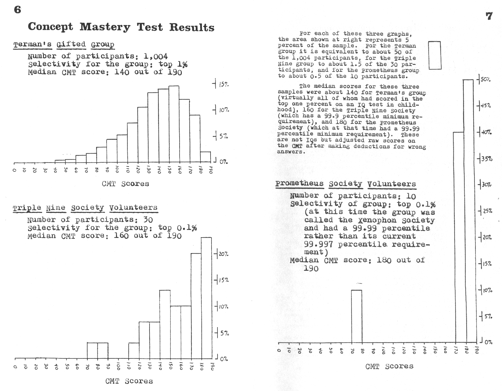
Available literature is so sparse that without more data we are unable to make a recommendation on this test.
We have examined the case for Chronometrics, and the ThinkfastTM(TF) computer-implemented "game" in particular, to explore the possibility of using such an approach for Prometheus Society entry criteria.
8.7.1 Some background on Chronometrics
Chronometrics is the use of performance on Elementary Cognitive Tasks (ECTs) to measure psychometric g. ECTs involve either no past-learned information content, or extremely overlearned and familiar content.
The Case for Chronometrics derives in part from Jensens book, The g Factor and other papers he has published on the subject. It must be noted, however, that Jensen is also a principal in Cognitive Diagnostics Corporation (otherwise known as "Braintainment") that markets the product, ThinkfastTM. However his analyses are representative of those of researchers in this field.
8.7.2 Correlation of chronometric measurements and intelligence
(Quotes are from Jensen, The g factor.)
Note : On many ECTs, the measure is either a median reaction time (RT) or the standard deviation of a reaction time (RTSD).
"For single ECTs, the correlations (with IQ) average about -0.35, ranging from -0.10 to -0.50, depending on the complexity or number of distinct processes involved in the ECT...ECTs that strain the capacity of working memory generally have higher correlation with IQ."
"A composite score based on RTs and RTSDs from several different ECTs, thereby sampling a greater number of general processes, typically correlates between -.50 and -.70 with IQ. (Recall that the average correlation between various standard IQ tests is about 0.80.)" Although the correlations between the Mega and other standard psychometric tests is typically considerably lower as can be seen in the analyses presented above. 'A review of several studies in which RTs (and RTSDs) from four or five different ECTs were combined shows multiple correlations ranging from .431 to .745 with an average R of .61 for RT, .60 for RTSD, and .67 for RT+RTSD.'" These correlations, based on college students, have not been corrected for attenuation or for restricted range of IQ...if so corrected, they would be larger by at least 0.10." RT and RTSD are independently correlated with g.
"The negative correlation between RT and IQ (and RTSD and IQ) exists within groups at every level of IQ, from the severely retarded, to university students, to members of Mensa."
According to Chris Brand in his own book entitled The G Factor, Inspection Time (IT), the length of time needed by a subject to see target stimuli presented very briefly, i. e., presentation time (PT), correlates around -.75 with g. Please take special notice throughout this section that "strong" correlations between chronometric measurements and g will be negative since the smaller the reactions times, etc., the higher the associated g value. Sometimes these correlation values are presented without a sign.
Spearman's law of diminishing returns identifies a problem with measuring comparable crystallized abilities at high levels because of the pronounced variation in such abilities at high levels. Chronometrics may well turn out to be the best method of measuring cognitive ability at high levels because it does not rely on any such abilities. Tests with high fluid g-loadings at normal levels of ability, such as the better IQ tests or certain ECTs/combination of ECTs, continue to have high g-loadings at very high levels of ability. In other words at the high range of crystallized abilities there is too much variety, whereas, chronometrics measures quantities much closer to the cognitive processes themselves; these are directly related to the biological functions of cognition.
Additional sources of data on this and related methods of testing are available in the following articles:
2. Fred Britton's article, "Is There a Physical Substrate to Intelligence" (Gift of Fire, Issue 83, March, 1997). There is a particularly good bibliography to this article,
3. Fred Vaughan's "Assessing Assessment of Mental Performance" (Gift of Fire, Issue 92, January 1998),
4. David Roscoe's "Group IQ Tests" (Gift of Fire, Issue 81, January 1997), and
5. Hedley St. John-Wilson's "The Scientific Evidence Behind 'General Intelligence' Tests" (Gift of Fire, Issue 95, January 1998) -- a very comprehensive article.
2. Ron Penner's "On Speed and Mental Testing" (Gift of Fire, Issue 92, January 1998), and
3. Kevin Langdon, "Admission Standards" (Gift of Fire, Issue 98, August 1998)
The ThinkfastTM involves a battery of 6 short games of chronometric cognitive tasks that Cognitive Diagnostics (the manufacturer) indicates correlate with g as high as .80. These tasks are as follows:
2. Complex RT speed and response standard deviation
3. Working Memory speed and response standard deviation
4. Working Memory Capacity (amount of information processed in short-term memory).
5. Perceptual threshold PT (speed at seeing briefly presented stimulus).
6. Subliminal perception threshold (discerning brief, random and subtle stimulus)
2. overall speed on games 1-5 -- 25% of the total (weighted toward game 4 speed)
3. game 4 hits- speed and accuracy of working memory
4. game 6- working memory capacity -- 20% of the total
Users may send encrypted score strings containing their results over the Internet. Cognitive Diagnostics (the manufacturer) maintains a scoreboard of the highest scores.
Thinkfast, in a form known as the Cognometer, is used by hundreds of hospitals and individual doctors to diagnose the severity of cognitive processing problems.
8.7.5 ThinkfastTM, the game as a psychometric instrument
Thinkfast is the first commercially available tool that is designed to allow users to measure their cognitive capacity by testing their performance on ECTs. If Thinkfast is to be used as a high-level psychometric instrument, the following questions need to be answered:
2. If it does correlate with IQ, is it capable of discriminating at the level necessary to be used for Prometheus admissions?
3. What are the problems with TF as a psychometric instrument?
Thinkfast does consist of a combination of ECTs, including two that test the speed, efficiency and capacity of working memory. According to the research cited above, a combination of such ECTs should correlate up to 0.70 with IQ.
Membership Committee member Bill McGaugh has three years experience playing TF and using it to test 16-18 year old high school Calculus students. In his articles, "Improving Mental Performance" (Gift of Fire, Issue 91, December 1997) and "A Reply to Ron Penners On Speed and Mental Testing" (Gift of Fire, Issue 92, January 1998) referenced above, he discusses and reviews his own experiences and early research with Thinkfast. Since the time of those articles, McGaugh has continued to gather data and research the validity of TF as a psychometric tool.
Figure 26 shows score pair data (TF level and SAT score) for individuals (ages 16-18) that have played Thinkfast for three weeks about one hour per day. The SAT scores were obtained on the "new", re-centered SAT. The Thinkfast level scores are based on a score of 43 equals "Brainmaster" (BM), a score of 45 is BM+1, etc (two units per level).
The average SAT score was 1304.5. The average TF level of the group was 38.9 (about Theta Silver). The correlation is 0.71. The standard deviation for the SAT scores was 139.3 and, for TF levels, was 8.0 (which is actually 4 levels, with each level being two units).
From this data, we get the linear model (which fits the data well):
Predicted SAT= 12.34 * (TF level) + 823.95
This model predicts that BM+10 would be equivalent to a 1601 SAT. Given that 453 students scored 1600 on the new SAT in 1996-7 (out of approximately 3,500,000 17 year olds in the United States), the predicted deviation IQ score (sigma = 16) for BM+10 would be 158. It follows that the Prometheus cutoff level (1 in 30,000) would be reached at about BM+11, rounded to the nearest level. To date, eight people out of an estimated 60,000 self-selected participants have reached this level or above on Braintainments list of high scorers.
McGaugh has also collected 46 score pairs of individuals with both TF scores and IQ or SAT scores on acceptably normed tests (Mega, Ravens, WISC, etc.). SAT scores were converted to IQ equivalents based on the frequency data available from the College Board. When the scores of the group on TF are sorted into order and compared to the IQ scores sorted into order, the following equivalencies are obtained:
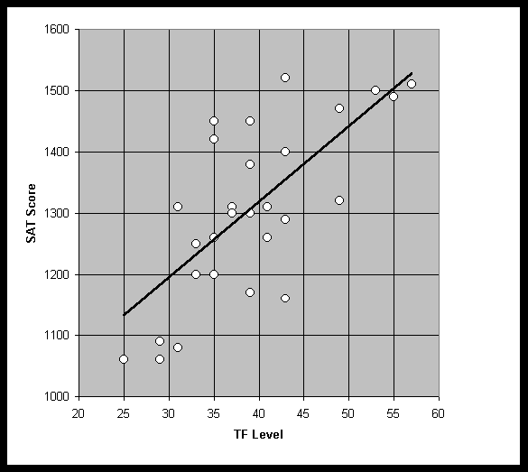
BM+11 = 164 IQ (five individuals at or above this level)
BM+5 = 150 IQ
BM+0 = 138 IQ
Up to, and including, BM+11, there is no reason to think that the Thinkfast deviates from a linear model. A linear fit works well at lower levels, and the progression from one level to the next corresponds to specific physical differences in efficiency, speed and working memory capacity.
8.7.6 The selective filtering involved in Thinkfast score reporting
With somewhere around 60,000 self-selected people having tried ThinkfastTM (many more than the LAIT or Mega), we might expect that the top 8 scorers would reach at least the level necessary for Prometheus admissions. Note: these are people that have the Internet, would visit a place called brain.com and would pay money to buy a "brain" game -- these are the characteristics of participants that we have found on other tests (i. e., the Mega and SAT) to be "highly filtered" for intelligence.
The producer of Thinkfast, Cognitive Diagnostics (otherwise known as "Braintainment"), reports that the average IQ for TF players using their IQ test is 117 (thousands of scores reported). Note, this shows that TF has been screening for a huge number of people that are one standard deviation above the mean. The average Thinkfast level is "Alpha-Silver". The average IQ of Bill McGaugh's ThinkfastTM players a year ago was 128 on a "bookstore" type of IQ test and their average Thinkfast level was "Theta-Blue" -- several levels higher than "Alpha-Silver."
We estimate Brainmaster level (+0) to be equal to IQ 137, based on the size of the last two graduating classes for which data was available and the fact that virtually all of the "high-level" talent attempted Thinkfast. This talent represented 1400 students and there were only 14 BMs among them. Note, there are only 141 BMs on Braintainments list of high scorers.
It does show consistent correlations. Once again, the score pairing method matches another method, in that the estimated 137 IQ is equivalent to BM+0 and score pairing indicated 138.
8.7.7 Discussion of perceived problems with Thinkfast
What are the problems with using Thinkfast as a psychometric instrument?
There are several problems associated with using Thinkfast for our purposes:
While we would definitely welcome more data, and will continue to try to collect it, we think that the lack of data with regards to Thinkfast is not as severe as it would be for the traditional psychometric instrument, due to the TF characteristics. We hypothesize that the linear relationship between IQ and TF scores in the range where data is more readily available will continue up to BM+11, and the limited score pairing data at that level preliminarily agrees.
Speaking about ECTs in general, Jensen says, "...how exceedingly little reaction times in these simple ECTs involve anything that could be called thinking , cogitation, or problem solving in any meaningful sense of these terms. RTs appear to reflect activity at a basic neural level that occurs prior to the full activation of consciously guided processes."
Jensen continues, "the important question with respect to ECTs...is whether individual differences...simply reflect individual differences in the use of strategies that are more or less efficient (or individual differences in the number of trials needed to discover a more efficient strategy)", he concludes that "nothing that could be called a general strategy factor has been discovered that is not just g in another guise.
Games 1-5 of TF are the type of ECTs that Jensen is describing. There are individual differences in movement (as opposed to processing) efficiency that explain differences in initial levels and rate of early progress (correlation close to 0), but after 12 hours of practice with the keyboard and mouse, the performances correlated 0.7 with SAT score (see above).
After several hours of practice and becoming used to the specific movement, there are apparently no tactics (in games 1-5) to apply to improve score. The information comes at the player in a random order, and as a higher score is obtained the information arrives at a quicker pace. In other words the demands on ones visual system, and working memory (decision making) plus the ability to maintain accuracy and efficiency become harder and harder to achieve. The individual ultimately is forced to his physical maximum ability. It is that ability that correlates with g.
One problem with game six is that, since the response is yes or no, a player may get a bit lucky and string a number of correct responses together, raising their overall Thinkfast level accidently (but no more that one level).
Another more serious problem is that the user starts the game at a level based on their last performance. This allows the possibility of certain kinds of "cheating" that will not be described here. This type of cheating can be discovered by a knowledgeable person examining the files of the player.
Game six also has a certain pattern to the game that, if discovered, can improve the players chances of success (but the pattern still requires the application of working memory).
In early versions of Thinkfast, there were a couple of bugs in game six that allowed users to obtain much higher scores than they would have been able to attain without the bugs. These bugs have been eliminated.
Despite all of the problems with game six, very few people have been
able to reach the levels in game six that are required to score BM+11.
Even if the player exploits the problems above, they will still have to
play game six for hours (and very accurately), to reach the highest levels
of the game.
The differences were more of a problem in the first versions of Thinkfast. Certain systems returned reaction times that differed from other systems by as much as 20 milliseconds. This difference could be worth about one level over all five reaction time games. The recent versions of Thinkfast do not seem to have the same problem.
Different keyboards feel a bit different and may change a persons performance from one machine to another, but only very slightly.
The Membership Committee thinks that differences between systems
are no longer an issue, as long as the player uses versions 3.05 and above.
The Membership Committee is convinced that we would not be vulnerable to an infusion of new members that do not meet the 1-in-30,000 criterion if we allow entry of individuals who have a validated score of BM+11 or above on any version 3.05+ of Thinkfast. In fact, we believe that the requirement may ultimately have to be relaxed somewhat to give Chronometrics test applicants an equal entry opportunity. This recommendation assumes mandatory detailed verification of the data by an expert with an understanding of the game and file structure. An expert can readily identify any of the various methods that people have attempted to use to cheat at Thinkfast. There are readily identifiable indicators of tampering.
If someone merely hacked the game to produce an apparent score, the file structure necessary would not be there and the creation of the necessary file structure by hand would be quite an ordeal probably much more difficult than forging a score sheet on standard tests. We probably would not want to allow employees or family members of Braintainment to be admitted using their own testing method, however. Friends might be a problem, but they would still have to recreate a very complex file structure and they could not be sure of exactly what indicators were being used to screen for such tampering.
Elementary cognitive tasks isolate basic cognitive functions from acquired strategies, algorithms, and knowledge. Using chronometrics would allow the Prometheus Society to become more global -- our current admission requirements including the other recommendations of this committee pretty much demand a degree of fluency in English (and, perhaps, mathematics). Chronometrics would remove that requirement for those for whom it was important.
Thinkfast may well prove to eventually be the best method to accurately measure differences in cognitive abilities out at the 1-in-30,000 level of our interest. That this should be accomplished in a content-free instrument would be a major advantage. Thinkfast is certainly not the perfect implementation of Chronometrics -- at least not yet, but it is by far the best tool currently available.
The general research on the information processing approach to intelligence testing, along with our own limited research, shows that the correlation of this type of test with g is about 0.70. This correlation is higher than usually required by tests accepted for entry to this Society.
8.7.9 One year trial recommendation
We are very concerned about using such an innovative approach as Thinkfast as an admission requirement to our Society. Allowing a product that, at first glance, appears to be an over-hyped game, is a bold step. We are not satisfied with the limited amount of data that we have, and we are not sure that we will have significantly more a year from now. There is some concern over the design of game six. It makes the game more vulnerable to improvement by learned techniques and more vulnerable to possible cheating.
However, in spite of these disadvantages we have been amazed at how even the sparse amounts of data support its claims of correlations with other psychometric instruments.
Even with the game six problems, a person must score very high on the highly g-loaded game four in order to score BM+11. According to the greatest experts in psychometrics, a combination of ECTs such as TF should correlate with IQ at about the level that our data indicates.
The Prometheus Society has always been rather experimental -- basing membership on the score on unsupervised tests designed by people without formal training in psychometrics. Using a tool based on current research is certainly no more scientifically precarious than past practice. The mere fact that Arthur Jensen allows his name to be associated with the company that produces this tool, lends a credibility and respectability to the product -- far more than our former admission standards.
At this time we are, therefore, recommending a special one year trial period for allowing entry to the Prometheus Society based on a score of "Brain Master + 11" obtained and confirmed as specified above using Thinkfast. Applicants should also send in a score report confirming 1-in-1000 level performance on an acceptable, supervised intelligence test.
8.8 Development of unique capabilities -- Elo-like scoring
However, the problem we perceive is that we need to develop and calibrate a set of very difficult problems. This requires a lengthy and well thought out long term project. From experiences with problems presented in Gift of Fire, Prometheans don't necessarily generate much response to such an endeavor. What is needed to accomplish this task is a group of dedicated individuals that will attempt to solve problems over a period of time, of say a month, with any problems left unsolved counting as "misses." This task cannot be completed by merely acknowledging the problems having been correctly solved -- there must also be an assessment of those which could not be solved after a determined effort.
It still seems like a very worthwhile line of research and we recommend that interested members or others pursue this to a point where it may be amenable to our use. But we are not taking an action item at this time to further this line of investigation.
On several tests, the Mega27 and ThinkFast, we are in fact recommending a combinational approach for insurance purposes (see section V).
Application of Ferguson's formula is a meaningful approach to raising the ceiling of a combination of testing vehicles, but it seems unnecessary at this time. We, therefore, take no action item to pursue this although we recommend research in this area.
In article II.2 it says that:
Interestingly, in Article I.2 of the Prometheus Society, its purposes are called out as follows:
b. To promote understanding and friendship between members.
c. To foster intellectual freedom.
d. To assist in research relating to high intelligence and intelligence testing.
e. To encourage and assist the efforts of members to attain high levels of achievement in the arts, the sciences, and other fields of endeavor."
Individuals have been assigned to these definitions rather at random to provide nearly even assignments and a list of individuals who could negotiate among themselves as to who made the first pass. These definitions are what we have taken these terms to mean and are what we mean when we use them.
Achievement Test --
Aptitude tests include those of general academic (scholastic) ability; those of special abilities, such as verbal, numerical, mechanical, or musical; tests assessing "readiness" for learning; and tests that measure both ability and previous learning, and are used to predict future performanceusually in a specific field, such as foreign language, shorthand, or nursing.
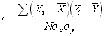
In the technical literature, the word correlation, without a modifier, always signifies Pearson's coefficient [the Pearson product-moment coefficient of correlation]. The many other types of correlation coefficient are always specified. Pearson's correlation is the most generally used, and reflects the extent of a linear relationship between two data sets. It is universally symbolized by a lower-case italic r (derived from Galton's term regression). The basic formula is:
X and Y are the means of variables X and Y in the sample,
sx and sy are the sample standard deviations of variables X and Y, and
N is the number of paired measurements.
In Microsoft ExcelTM, the syntax for calculating the correlation, r, of two arrays is: PEARSON(array1, array2)
Correlation of X1 and X2:
R(1,2) = R(X1,X2) = COV(X1,X2) / (SD(X1)*SD(X2))
R can be used instead of R(1,2) if only two random variables are being discussed.
COV(1,2) = COV(X1,X2) = E[(X1 - MEAN(X1)) (X2 - MEAN(X2))] ,
which is to say, COV(X,Y) of the pair of random variables is the expected value of the product (X - m1) (Y - m2), where m1 is the mean of the X distribution and m2 is the mean of the Y distribution. Covariance is the mean deviation product, and measures the degree of association between X and Y. Independent random variables have covariance of 0.
"Finally, to the extent that a theory of mental ability tries to explain individual differences solely as the result of learning, it is doomed to refutation by the evidence of behavioral genetics, which shows that a preponderant proportion of the variance of IQ (even more so of g) consists of genetic variance. An individual's genes are certainly not subject to learning or experience. But it is certainly a naive mistake to suppose that the high heritability of g implies that a great variety of learning experience is not a prerequisite for successful performance on the tests that measure g. What high heritability means is that individual differences in test scores are not mainly attributable to individual differences in opportunity for the prerequisite learning." Jensen (The g Factor)
E(X) is the average value in a large sample, the sum over x of x*P(x) for a discrete random variable, the integral of x*f(x) for a continuous random variable.
"Given a wide variety of tests in the factor analysis, Gf [fluid g] and g appear to be one and the same factor, or at least to be so highly correlated as to make Gf redundant for all practical purposes." -- [from Jensen's The g Factor, p 125]
The nature of g is not defined by the type of tests that have the highest g loadings. Spearman realized that characteristics such as relation eduction and abstract reasoning were good indicators of g, but they don't define the nature of g. The most important point to understand is that these features may indicate the presence of g, but they are definitely not its essence. g (which is normally described as general intelligence) cannot be described in terms of information content or item characteristics. g is a useful concept because it provides important and accurate accounts about human behavior, particularly about individuals' inherent learning capacities and is therefore used as a measuring tool for these attributes. Tests which are designed as measurements of specific content problem solving abilities like the SAT do not fall into this concept because they measure achievement rather than inherent learning capacities (for which IQ tests / g loaded tests are designed) - Philip Yarm. g is not a direct problem solving process, and is not a specific cognitive process or operating principle of the mind. A test's g loading neither reveals any bearing on its difficulty. At the level of biological causality, g is strongly and virtually entirely associated with individual differences in the speed and efficiency of the neural processes that affect mental abilities.
A test's (or task) correlation with the general factor common to all measures of mental/cognitive performance tests.
"The candidate is set problems which as far as possible make little or no call on acquired knowledge. If such knowledge is necessary for tests, then it is important to make sure all candidates possess it equally." -- Hans and Michael Eysenck (Mind Watching)
KR20 = n (s^2 - Spq) / ( (n-1)(s^2) ),
where KR20 is the reliability for the whole test, s = standard deviation of total scores on the test, S = the summation symbol, p = proportion of subjects passing each item, q = proportion of subjects failing each item.
Since the split-half method usually uses items such that equivalence is maximized between the two halves, the KR20 result will generally be lower. The difference between the two results may be used as a measure of the heterogeneity of the test.
Average. Mean of X: MEAN(X) = E(X) = SX/N = total of scores / number of scores
Mental performance ability test --
A measure of central tendency, the score that occurs most frequently in a distribution.
Modality of distribution --
A distribution of scores or other measures that in graphic form has a distinctive bell-shaped appearance. In a normal distribution, the measures are distributed symmetrically about the mean. Cases are concentrated near the mean and decrease in frequency, according to a precise mathematical equation, the farther one departs from the mean. The assumption that many mental and psychological characteristics are distributed normally has been very useful in test development work.
Figure IX.1 below is a normal distribution. The figure shows the percentage of cases between different scores as expressed in standard deviation units. For example, about 34% of the scores fall between the mean and one standard deviation above the mean.
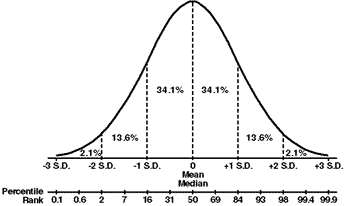
Normalized Score --
An interpretation of a test score that takes into account measurement error. These bands, which are most useful in portraying significant differences between subtests in battery profiles, most often represent the range from one standard error of measurement below the obtained score to one standard error of measurement above it. For example, if a student had a raw score of 35, and if the standard error of measurement were 5, the percentile rank for a score of 30 to the percentile rank for a score of 40 would be the percentile band. We would be 68% confident the students true percentile rank falls within this band. (See Standard Error of Measurement and True Score.)
Percentile Rank --
Jensen cites empirical evidence in support of the Spearmans Law (Deary et al., 1996), showing that the variance accounted for by g was lower in a group of higher ability than in a group of lower ability. This study is important because it controlled for the effect of restriction of the range (which can mimic Spearmans Law) by equating the comparison groups for variance. The article includes a history of the theory.
The implication of Spearmans Law for us is that it raises the question of how much the importance of g is lessened at very high levels such the four-sigma level. It is quite likely that there is very little research on the effects at such levels.
The implications are really explained by something Brand brings up in his book, The g Factor (not to be confused with Jensen's book by the same name). Firstly, Brand points out that there is no agreed nomenclature for cognitive abilities other than g, even though terms like verbal and spatial have been used. 'Fluid' and 'crystallized' forms of g have been identified (initially around 1930). Between these two highly correlated types of ability, only one in eight in the general population will have scores that differ significantly. Other than g, Brand explains that there are the 'Big Five' dimensions of personality which are accepted as indicating the main differences in human ability:
The Big Five are:
1. verbal vs spatial,
2. independence vs field dependence,
3. short-term memory vs long-term memory,
4. originality vs accuracy,
5. conditionability vs extinctionability,
The important aspect of this is that people who are above-average in g are more differentiated according to these personality factors. Higher g levels yield more personality diversity. This sheds light on people with high g revealing more diversified abilities as implied by Spearman's Law of diminishing returns. People with high g are likely to invest their cognitive ability in many different ways and therefore develop considerably different forms of crystallized intelligence. One can only expect tests that measure fluid intelligence to provide a consistent and reliable accout of differences in innate cognitive ability between individuals with high g.
The standard deviation as defined above is calculated using the "nonbiased" or "N-1" method. This assumes that the data being analyzed represents a sample of the population. But for large sample sizes, N-1 can be replaced with N.
In Microsoft Excel, the syntax for calculating the nonbiased standard deviation is: STDEV(array)
If we are working with an approximately normal distribution, it is sometimes convenient to convert percentile rankings into standard deviation (or z) scores. For example, a score on an IQ test that is in the 98th percentile is roughly 2 standard deviations above the mean. The caveat here is that IQ distributions are not necessarily perfectly normal (differences from normality would be greater at the tails), so the transformation of percentile rankings into standard deviations may be misleading.
Standard Deviation of X: SD(X)=SQRT(VAR(X))
Cumulative distribution function (CDF), Fx(x) for the random variable X is defined for all numbers x by Fx(x) = P{X <= x}.
 Probability density function
(PDF), fx(x) = P{a <= X <= b} =
Probability density function
(PDF), fx(x) = P{a <= X <= b} =
Distributions are often characterized by measures of central tendency such as the mean, mode and median, and by measures of dispersion such as the standard deviation, and by other parameters such as kurtosis and skewness.
Refer to Probability Models and Applications by Olkin, Gleser, Derman, for example
Of course, the reliability obtained by the split-half method (the correlation between the two halves) is the reliability of a test of half the length. To estimate the reliability of the whole test, this figure should be corrected using the Spearman-Brown formula (simplified version for doubling test length) for the effect of the length of the test on reliability: R = 2(Rsh)/(1+Rsh), where R = estimate of reliability of whole test, Rsh = split-half reliability.
1. Content validity: For achievement tests, content validity is the extent to which the content of the test represents a balanced and adequate sampling of the outcomes (domain) about which inferences are to be made.
2. Criterion-related validity: The extent to which scores on the test are in agreement with (concurrent validity) or predict (predictive validity) some criterion measure.
Predictive validity refers to the accuracy with which a test is indicative of performance on a future criterion measure, e.g., scores on an academic aptitude test administered in high school to grade-point averages over four years of college. Evidence of concurrent validity is obtained when no time interval has elapsed between the administration of the test being validated and collection of data. Concurrent validity might be obtained by administering concurrent measures of academic ability and achievement, by determining the relationship between a new test and one generally accepted as valid, or by determining the relationship between scores on a test and a less objective criterion measure.
3. Construct validity: The extent to which a test measures some relatively abstract psychological trait or construct; applicable in evaluating the validity of tests that have been constructed on the basis of an analysis of the trait and its manifestation.
VAR(X)=E[(X - MEAN(X))2]
The concepts and methods described here are what we, the members of this committee, have used in one capacity or another in the analyses that we have performed. Some of the methods described here are standard statistical approaches to the kinds of problems we have addressed, but include them for handy reference to the evaluators of our work. Others incorporate more innovative concepts and methodologies that seem worthy of documentation.
Bayes Theorem --
P{x | y} = P{xy} / P{xy}
where P{z} represents the probability that z occurs, P{zy} the probability that z and y occur, and P{z | y} the probability that z occurs given that y has occurred. The conditional probability formula can be read, "The probability that x will occur, assuming that y is known to have occurred, is equal to the probability that both x and y occur divided by the probability that y occurs." But Bayes theorem pertains to the more general case where there are multiple conditions so that we have:
P{xk | y} = P{y | xk } P{ xk } / SUMi( P{y | xi } P{ xi} )
where SUMi(ui) indicates the summation of the products ui over all pertinent conditional assumptions xi.
William Feller, the consummate probability theorist, made the comment with regard to Bayes theorem, that: "it is logically acceptable and corresponds to our way of thinking. Plato used it to prove the existence of Atlantis and philosophers used it to prove the absurdity of Newtons mechanics." But it is none-the-less a very useful tool if used correctly. See for example the discussion under Intelligence filters below.
Checking for statistical independence, esp. how correlated variables and (self-)selection biases can affect score distributions -- (Refer to discussions of Cofactor Analysis and Selective Filtering.)
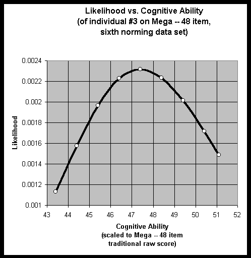
Equipercentile Equating --
"Regression," however, is not symmetric because regression of A on B does not generally give the same relationship as regression of B on A (they are the same only if the correlation is 1). For this reason, regression is not used for test equating.
Equipercentile equating is frequently used when there are differences in difficulty between different tests. For example, one test may be more difficult than another at high and low scores, but less difficult in the middle. "The equating function is an equipercentile equating function if the distribution of scores on [test A] converted to the [test B] scale is equal to the distribution of scores on [test B] in the population. The equipercentile equating function is developed by identifying scores on [test A] that have the same percentile ranks as scores on [test B]." [from p. 35 of Kolen & Brennan].
When scores are discrete:
"A tradition exists in educational and psychological measurement to view discrete test scores as being continuous by using percentiles and percentile ranks as defined in many educational and psychological measurement textbooks. ... In this approach, an integer score of 28, for example, is considered to represent scores in the range 27.5 - 28.5. Examinees with a score of 28 are conceived of being uniformly distributed in this range. The percentile rank of a score of 28 is defined as being the percentage of scores below 28. However, because only 1/2 of the examinees who score 28 are considered to be below 28, ... the percentile rank of 28 is the percentage of examinees who earned a score of 27 and below, plus 1/2 the percentage of examinees who earned an integer score of 28." [from p. 37 of Kolen & Brennan].
It is important to note that, in "score pairing," the equipercentile equating technique is being used only on the sub population that took both tests. Thus, an SAT-to-Mega relationship was determined by equipercentile equating for the 220 or so that reported both SAT and Mega scores. We assume that the same general SAT-to-Mega relationship holds for the rest of the 4000 or so who have taken the Mega test. There would be a standard error (i.e., 1/30,000 corresponds to Mega score of 36 +/- something) associated with the size of the sample, etc. This standard error would probably be proportional to the standard deviation of the Mega test (about 9) divided by the square root of the number of people in the sub sample (220).
We have spent considerable time discussing the legitimacy of this method and believe the approach itself to be an appropriate method to be used with the Mega and SAT data, even though there are some problems with the distribution patterns. It would be nice if we could insist on admission tests (or a battery of admission tests) which have validity and reliability above some cutoff (say 95%), but we don't believe we will have that luxury. There aren't enough instruments that discriminate or enough candidates that qualify at the 1/30,000 level. We will have to do the best we can with plausibility arguments and accept the fact that this is an imperfect science. The Prometheus Society entrance criteria should be a score above the cutoff on any of the accepted tests (with some of the tests, perhaps, also requiring, in addition, a 99.9% score on a supervised test).
Let H(n) be the number of people who scored n on the high level mental performance test and let N be the total number of people who took the test. Then the conditional probability that someone would score n on the test given that they took the test is
P(n; take test) = H(n)/N
By Bayes Theorem
H(n) / N = P(n) * f(take test; n) / SUMn[P(n) * f(take test;n)] = P(n) * F(n), where
F(n) = f(take test; n) / SUMn[P(n) * f(take test;n)]
Note that the denominator on the right side of the last equation is a constant independent of n, so F(n) is just proportional to f(take test; n), i.e. the conditional probability that someone who would score n on the Mega test will take the test. This function is given by
F(n) = H(n) / P(n)
H(n) is given by the associated norming data for the test; the constant N has been absorbed into F(n), and P(n) is just the probability that someone in the general population would score n on the test, which is (a section of) the normal distribution.
P(n) = NORMDIST(n, MEAN = MH, SD = SH, False)
(Note: P(n) should actually be the integral of this expression from n-1/2 to n+1/2, but the error introduced by using the above expression is less than 1%).
H(n) = Mega(n) is the number of respondents scoring n on the Mega and P(n) is the probability of occurrence of individuals in the general population who could score n on the high level mental performance test (the Mega in this case) if they took the test. F(n), the filter, F(n) times Np, does not have a theoretically-predetermined form. It is merely a best fit to the reality of the situation. Several different forms seem to predict the actual data better in different situations.
Figures 9 and 10 in the body of the report plot MegaIQ(n), the actual raw score distribution for the sixth norming rescaled to a uniform standard IQ scale on the abscissa as determined by the fourth norming of the Mega Test. Also plotted in those figures is the hypothesized general distribution that accounts for virtually all of the scores at or above the 4 sigma level. In addition, the filter that selects from the general population to predicted the Mega IQ standard scoring distribution is plotted.
In a similar way selection of which students will actually take the SAT involves high levels of filtering as can easily be demonstrated by comparing distributions of a cross section sampling of high school students and data for "college bound" students. The "college prospect" has in itself always resulted in filtering of who takes the SAT -- a rather effective filter actually. For the case of the SAT selective filter shown in figures 18 and 19, the best fit is obtained using the cummulative normal distribution:
f(n) = NORMDIST(n, MEAN, SD, True)
The MEAN = 1350, SD = 770. In addition in this case there are severe (probably pathological) filtering of the general population at the lower and upper ends of the general population distribution. Virtually no one whose score would be less than 400 ever takes the SAT. This is also the case in the National High School Survey sample; the reason no doubt being that the associated score corresponds to IQs for which even attendance in high school is virtually impossible. See the table in section 8.3.2 where it is seen that severe retardation applies to this region of the scale. One might suspect a similar pre-filtering at the extreme upper end for which numbers are somewhat under what one would predict if a normal distribution applied at this extreme; perhaps hypersensitivities and mental illness preclude viability in the high school environment.
Similar phenomena no doubt occur for the GRE and other tests for which very restrictive subsets of the population have participated. However, we have been unable to find sufficient data to evaluate these
Factor analysis --
( k * ( k - 1) ) / 2
where k is the number of problems on a test. For convenience, these correlations are presented in a matrix format, called the Correlation Matrix
This matrix is triangular. The entries in the bottom left portion are omitted as they are redundant with those in the upper right (the correlation between a and b is the same as the correlation between b and a...). The correlation of a variable with itself, appears in the diagonal entries of the matrix, are all 1.00 and convey no useful information. It is this correlation matrix is what we are trying to understand with factor analysis.
Computer programs are currently available which factor elements to obtain a minimum set of "independent" components upon which the measured data all "depend." In a factor analysis, independent factors are assigned to columns in another matrix, with the problems associated with rows in this matrix. The elements in this matrix (that look a lot like correlations) are called "factor loadings." They are an index of the degree of relationship between scores on the specific measure and the "factor." Thus a very high loading (e.g., .85 for say Factor I) indicates that the measure is highly associated with that factor. This is sometimes called "saturation," in which case one we might say that the problem is highly saturated with Factor I because of the high loading.
The most difficult aspect of factor analysis may be to find a way to interpret the factors -- to discover what they represent. This can be a rather subjective enterprise -- but it can also be done with considerable objectivity. The tricky part of factor analysis is to apply it to domains where we don't know what to expect and see how many and what kind of factors can be seen to underlay this domain
Thurstone uncovered 7 factors when he factor analyzed a set of intellectual measures. This was the first application of this technique, called COMMON factor analysis. Currently active researchers argue about "g" which was "uncovered" in this way.
VAR(X1+X2) = VAR(X1) + VAR(X2) + 2*COV(X1,X2)
for random variables X1 and X2, or
(SD(X1+X2))2 = (SD(X1))2 + (SD(X2))2 + 2*R(X1,X2)*SD(X1)*SD(X2).
For n random variables:
(SD(X1+X2+...+Xn))2 = (SD(X1))2 + ...+ (SD(Xn))2 + 2*SUMij[R(Xi,Xj)*SD(Xi)*SD(Xj)]
where SUMij is the sum over all i,j from 1 to n and with i less than j.
This equation is discussed in most probability and statistics books, including Statistical Analysis in Psychology and Education 3rd ed., by George Ferguson (pages 103-105 are reprinted in Noesis #141. This text is evidently the reason the term "Fergusons formula" is used).
The utility of this formula can be shown by the following example. Suppose X1 and X2 are scores on two different IQ tests with correlation .7, mean 100, and standard deviation 16. Then, according to Fergusons formula,
SD(X1+X2) = SQRT[162 + 162 + 2*.7*16*16] = 29.5
Also,
MEAN(X1+X2) = MEAN(X1) + MEAN(X2) = 200
So X1+X2 has mean 200 and standard deviation 29.5. The-4 sigma level on the combined test is 200+4*29.5=318=2*159. Thus an average score of 159 on two tests with .7 correlation would correspond to the 4 sigma level, or to an IQ of 164 on the combined tests. For two tests with .6 correlation, an average score of 157 would correspond to the 4-sigma level.
CAUTION. As pointed out in a letter from Grady Towers in Noesis #141, "When you combine test scores you must use the metrics of the tests being used (mean and standard deviation), and not the metrics for the general population." EXAMPLE: For the LAIT and for the Mega, the mean is about 142 and the standard deviation is about 9.5 (According to Grady Towers letter in Noesis #141). The LAIT-Mega inter-test correlation is about .6 (More accurate numbers, anyone?). Then the mean for the LAIT + Mega scores is 284 and the standard deviation is SQRT[9.5^2 + 9.5^2 + 2*.6*9.5*9.5] = 17. For both the LAIT and the Mega, the "4-sigma cutoff" is at (164-142)/9.5=2.3 test standard deviations above the test mean. 2.3 standard deviations for the LAIT + Mega is at 2.3*17=39.1, for a combined score of 284+39=323, or an average score of 161.5. (Its not obvious to me how to simply apply this formula in the case where the two tests have different means and standard deviations, in which case they would have different "4-sigma cutoffs" expressed as number of test standard deviations above the test mean. I havent spent very much time on this problem, though. Maybe someone else on the MC knows how to do this).
Advantage of this approach: It can allow high scores from two (or more) tests with ceilings below 4-sigma to be combined in a way that allows 4 sigma individuals to be identified.
Disadvantage: If 4 sigma scores on Test A OR Test B qualify one for membership, then in effect the Society is already selecting below the 1/30,000 level (see Grady Towers article on use of multiple tests at Darryl Miyaguchis web site), and this situation is even worse if the qualification criteria are something like "A score of 164 or higher on Test A OR a score of 164 or higher on Test B OR an average score of 161.5 or higher on Tests A and B." -
Once simplistic scoring methods which do not take into account which problems were missed on a test are abandoned, it is becomes necessary to analyze the specific probabilities of missing a particular (rather than just any) problem on the test as well as the capability of the individual her/himself. This is because it is the expectation that derives from the individual's scores on other problems on the test that contributes to his likelihood of missing the particular problem. What we are trying to assess is the most likely mental ability Cj that goes with the individual's particular permutation of right and wrong responses to the questions. This is assessed by analyzing the probability associated with that permutation as follows:
N
Pk1 ,k2 ,kK (Cj ) = ( 1 - pk1(Cj ) ).( 1 - pk2(Cj ) ) ... ( 1 - pkK(Cj ) ) . P { pn (Cj ) }
n ¹ k1¹ k2¹ kK
where Pk1 ,k2 ,kK (CK ) is the probability for an individual of ability CK missing problems k1, k2,, kK. pk1(CK) is the probability for an individual of ability CK missing problems k1. (See figure X.4.) The product of the N probabilities of correctly answering all N problems is indicated by the series product symbol, P {pn}.
We may begin by using CK to characterize two individuals who each missed K total (but unique sets of) problems. A systematic method of trial and error with different values of Cj is used to obtain the correct value of Cj for which Pk1 ,k2 ,kK(Cj ) is maximized for each individual. That value of Cj will be different in the two cases if the problems they missed have different problem difficulty probability distributions. To understand these
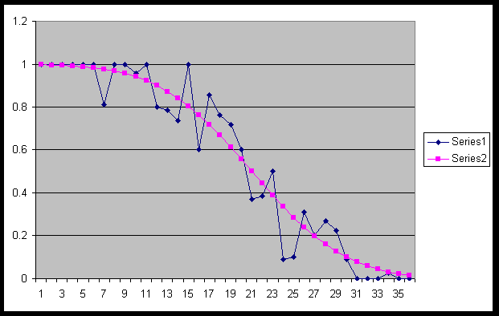
Pk1(CK) / Pk2(CK) = { ( 1 - pk1(CK ) ). pk2(CK ) } / { pk1(CK ).( 1 - pk2(CK ) }
Clearly, these probabilities are only equal if:
pk1(CK ) = pk2(CK )
or both
( 1 - pk1(CK ) ) = pk1(CK )
and
( 1 - pk2(CK ) ) = pk2(CK )
The first of these conditions corresponds to an ideal test for which any two problems have an identical scoring profile. This will rarely be realized -- certainly not on the Mega. The second condition corresponds to an even more stringent instance of the first where the probabilities of success and failure happen to both be precisely equal.
Maximum Likeihood scoring is illustrated in figures 4&5 in the body of this report.
FRED BRITTON
B.A. in psychology and philosophy (U. of Waterloo). Two years of graduate school in psychology (University of Illinois), specializing in the area of personality. Three courses in statistics, two undergrad, one graduate. One graduate level course in the theory of psychometrics. Was a research assistant to R. B. Cattell in the '67 to '68 academic year. First came into contact with the technique of factor analysis at that time. Cattell's personality theory was essentially built on factor analysis. Also became familiar with Cattell's theory of fluid and crystallized intelligence at that time.
VOCATION:
I have played poker and engaged in other forms of gambling at which one can get an edge, such as speculative markets. I am currently engaged in several gambling-related programming projects, written in the C language. My long-term ambition is to create a poker program that is to poker what Deep Blue is to chess. I plan to call it Deep Pockets :-)
So as not to be too narrowly focused, I am also learning the winemaking business. Seems like it would be a nice retirement business.
AVOCATION:
Have maintained an interest in psychology over the years, including an interest in the special areas of intelligence and psychometrics. Have also maintained an interest in the area of the practical application of statistics and probability theory.
Reading: Have read Jensen's Bias in Mental Tests and The g Factor. Have read Chris Brand's The g Factor, Brodie's Intelligence, and various other authors' works on intelligence or testing.
PUBLICATIONS:
Coauthor of a book on searching for and identifying roulette wheels with number biases, The Biased Wheel Handbook. My coauthor wrote most of the text, based on our joint ideas. I did all the mathematical tables, formulas, proofs, etc. as well as set up the statistical analysis.
BS in Electrical Engineering, MS and PhD in Electrical Engineering, Information Theory. Assisted teaching a course in probability, took three courses in random processes, in one of which I got an A+, took a course in decision and estimation theory.
VOCATION:
Worked with the Singular Value Decomposition (SVD) for five years, which is the "signal processing" version of factor analysis.
AVOCATION:
Biases: The more g loaded is a test the more I like it, both as an experience and as an instrument for selection for Prometheus. Want a "culture fair" way of getting people into Prometheus. Want less emphasis on math and puzzle solving for admission, i.e. want tests to be more "woman-friendly". Want less drudgery than the Mega Test imposes.
PUBLICATIONS:
Numerous contributions to High IQ journals
B.S., M.S., Ph.D. in Physics, M.A. in Math. Currently half way through an M.A. in Philosophy. About twelve years ago I toyed with the idea of becoming an actuary. I studied for and passed the probability & statistics actuarial exams, but haven't used those skills since.
VOCATION:
Manager of aerospace R&D projects for the last eleven years.
AVOCATION:
I became interested in intelligence (definitions, distributions, etc.) after taking the LAIT nineteen years ago. Recently I read most of Jensen's The g Factor. I just bought Eysenck's Intelligence: A New Look, but haven't read it yet. I've spent some time playing around with the Mega test data published at Darryl Miyaguchi's site.
BIAS: It will not be possible to find a way to test at the 1/30,000 level such that the test is 1) Reliable, 2) Practical to implement, and 3) Immune from cheating. But it will be interesting to see how close we can come!
PUBLICATIONS:
I've published a dozen papers in the peer-reviewed scientific literature on various topics including theoretical elementary particle physics, early meteorite impacts as they relate to the origin of life, dust storms on Venus, and "sense of presence" in virtual environments. Nothing immediately relevant to the charter of the MC.
Two degrees in music plus California Teacher Credential from San Jose State University.
PhD. in Education with emphasis on Educational Psychology
VOCATION:
Teacher, School Principle, Professor of Music for seven years. Currently school Principle.
AVOCATION:
Triple Nine Society Psychometrician
PUBLICATIONS:
College level text in Music Appreciation, works of poetry, a few of his school entrance tests are being used across the country
M.A. Clinical Psychology (1997); Ph.D. Clinical Psychology in progress (ABD); Major Track: Neuropsychology; Minor Track: Biopsychology
VOCATION:
Clinical Psychologist; Currently on Internship: Major Rotation: Neuropsychology; Minor: Consultation-Liason Psychiatry. Most of my assessment experience has been with head-injured, psychiatric, or medical populations.
AVOCATION:
Ongoing research over past 5 years. Principal Investigator on two grant-supported projects. Research assistant on two other projects. Have done a lot of reading on intelligence and creativity.
PUBLICATIONS:
Numerous articles for chess journals, primarily Chess Life, and Chess Mate. The only publications that have to do with assessment is a paper on assessing neurotoxicity (in review), and the following:
LoSasso, G.L., Rapport, L.J., Axelrod, B.N., & Reeder, K. (1998). Intermanual and alternate-form equivalence on the trail making tests. Journal of Clinical and Experimental Neuropsychology, Vol. 20, No. 1, pp. 107-110. (Has to do with assessment and handedness.)
I have a Bachelor's in Psychology from UCLA, a Master's in Educational Psychology from the University of California, Riverside, and have a couple of years of course work toward a Ph.D. in Ed.Psych, specializing in psychometrics...I have had about a dozen Ph.D. level courses in Statistics, including courses in Psychological Testing, Factor Analysis, etc..
VOCATION:
I am a Mathematics/Computer Science teacher at the moment (and have teaching credentials in Physics, Chemistry, Biology, Social Sciences, and Physical Education)
AVOCATION:
One of my problems with Memcom participation has been that I keep falling into a "paralysis by analysis" mode...I have spent a lot of time playing with many different statistical techniques, exploring ideas that are fun, but end up not being useful. I decided I needed to get over that.
PUBLICATIONS:
BS, MS in electrical engineering; no classes in psychology or statistics.
VOCATION:
15 years at a large engineering firm; current assignment requires some knowledge of basic statistics; competent in C programming; know my way around Excel.
AVOCATION:
Familiar with and have in my possession all 6 Mega Test normings. Understand the mechanics underlying and am able to reproduce Grady Towers' norming of the Mega Test. Can describe (but not reproduce) Keith Raniere's norming of the Mega Test.
Books read: The g Factor, The Bell Curve, How to Think About Statistics. (I know it's not very much!) Would like to get around to reading Gulliksen's Theory of Mental Tests, Jensen's Bias in Mental Testing, Hambleton's introductory text on Item Response Theory, and Arpad Elo's book on chess ratings.
PUBLICATIONS:
Maintains the primary Internet "Grand Central" for the High IQ community at his Uncommonly Difficult I.Q. Tests website: <http://www.eskimo.com/~miyaguch/>. Much of the raw data used in the analyses of this report are also available at this site.
(i) Scientific education
Bachelor of Medicine, 1987 (Karolinska Institutet, Stockholm)
Piano studies at the Royal College of Music, Stockholm 1986-1990
Master of Perfoming Arts (Royal College of Music, Stockholm), 1990
Post-graduate studies in Colone and Freiburg (Germany), 1992 (funded by Swedish Academy of Music)
Attended around 8 international master-classes 1986-1992
Studies in harmony, counterpoint and organ with dome organist Gunnar Nordenfors 1978- 1983
Cantor (Uppsala, 1983)
(i) Current position
(Project: Modelling of neural mechanisms for postural control and spatial orientation)
Free-lance pianist: performs extensively as soloist & chamber musician in Europe, including participation in ca 10 different international music festivals; tour organized by Swedish National Concert Institute, 1997
AVOCATION (relevant):
Read Jensen, The g factor; Eysenck, Genius; Gardner, Extraordinary Personalities; Gardner, Frames of Mind
PUBLICATIONS:
(i) Science
2 solo CDs (BIS Gramophone)
participation (single tracks) on 2 other CDs (Caprice, Queen Sonja Music Competition)
CHOC de Le Monde de la Musique (BIS CD-783)
Disc of the Week (The Guardian) (BIS CD-783)
BIS CD-783 was also nominated among best 5 five CDs 1996 by three independent
international reviewers
Working Scholarship, Swedish Academy of Music, 1997
Working Scholarship, Swedish Artistic Council, 1998
numerous smaller stipends in music and science
BS in physics with course credits enough for a BS in math as well. Some graduate study in physics. Probability and statistics courses. Attended seminars where related topics were being taught via crash course techniques as a part of vocation.
VOCATION:
An aerospace engineer for over thirty years with most of that time spent in electronics research. I have studied, designed and implemented tracking filters and spent some time (and budget) looking into the duality of the track-estimation/sensor-tasking-control problem which is quite related to what we have to analyze. I have also coordinated activities for highly technical teams.
AVOCATION:
Mostly my interests are in physics. My interest in intelligence distributions began after I joined the high IQ groups. I've read Gould, Dennet's Consciousness Explained, some hype on giftedness, Descartes, and William James's Psychology. Gelb's Applied Optimal Estimation is a good book, Fuller on probability and statistics.
PUBLICATIONS:
I have written numerous technical papers and articles that have appeared in journals and conference proceedings of the IEEE, ACM, and AAS and have received the Outstanding Paper award from the IEEE Computer Society. The papers ranged in topic and scope; a couple were intimately involved with conditional probability analyses of resource contention and reliabilities of complex systems. I also have three patents on computer systems.
BA Hons University of Durham
Erasmus University of Paris
VOCATION:
Previous work in media & technology, and television documentaries. I am currently a student. AVOCATION:
Familiar with work by Eysenck, Jensen, Howe, Sternberg, Brand, Hendrickson, Simon, Haier, Vernon, Thorndike and other researchers.
I am interested in the development of fluid intelligence and the development of the many forms of crystallized intelligence such as musical, mathematical, linguistic, artistic etc..
PUBLICATIONS: Several Gift of Fire Articles